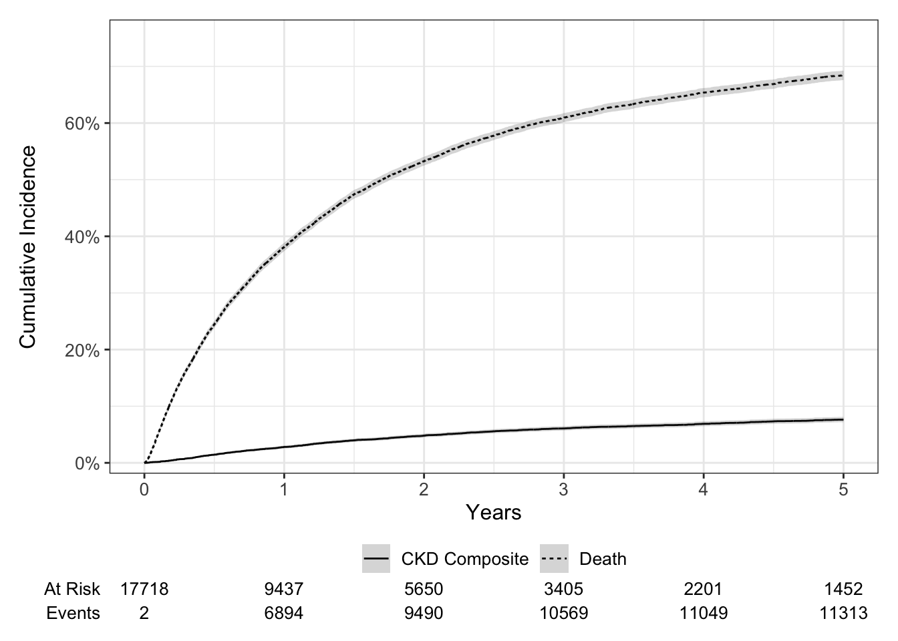
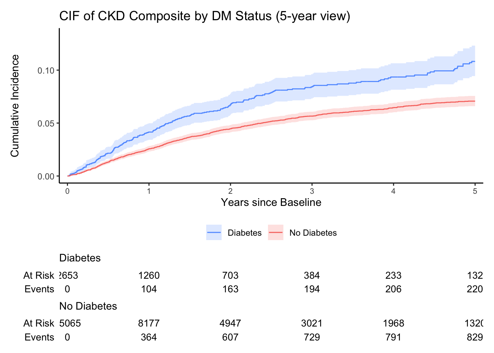
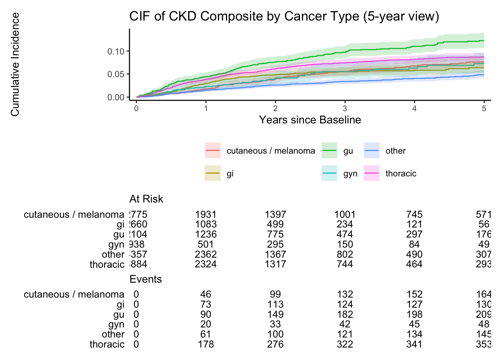
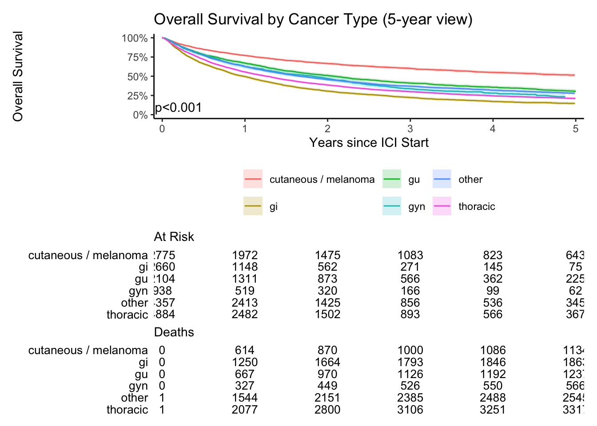

library(tidyverse)
library(readxl)
library(scales)
library(ggplot2)
library(gtsummary)
library(table1)
library(survival)
library(tidycmprsk)
library(ggsurvfit)
# Cleaned master produced by the data management pipeline (see data_management.qmd)
master_updated <- read_excel(
"Final cohort/final_master_0114_raw.xlsx") %>%
mutate(across(contains("date"), as.Date))
aki <- read_excel("Final cohort/aki_0120.xlsx") %>%
mutate(across(contains("date"), as.Date))
# ICI class reference
ici_class <- read_excel("ICI CKD/final_master_1229.xlsx") %>%
select(EMPI, ICI_Class)Kavita ICI CKD — Analysis
1 Setup
1b Analytical derivations
Everything below duplicates the derivation block at the top of the original Kavita cohort 2026 0130.Rmd. It takes the cleaned master + AKI table and builds the composite outcomes, competing-risk status, yearly eGFR / CKD stage, and scaled regression covariates used in every downstream section.
ckd_epi_gfr <- function(creat, male, age) {
k <- ifelse(male == 1, 0.9, 0.7)
a <- ifelse(male == 1, -0.302, -0.241)
m <- ifelse(male == 1, 1, 1.012)
gfr <- 142 * min(c(creat/k, 1))^a *
max(c(creat/k, 1))^-1.2 *
0.9938^age * m
return(gfr)
}
gfr_calc <- Vectorize(ckd_epi_gfr)
get_ckd_stage <- function(egfr) {
if (is.na(egfr)) return(NA)
else if (egfr >= 90) return(1)
else if (egfr >= 60) return(2)
else if (egfr >= 30) return(3)
else if (egfr >= 15) return(4)
else return(5)
}final_master <- master_updated %>%
merge(aki, by = "EMPI", all.x = TRUE) %>%
mutate(aki_days = as.numeric(aki_date - ICI_Dose_Date),
aki = if_else(is.na(aki), 0, aki)) %>%
merge(ici_class, by = "EMPI", all.x = TRUE) %>%
filter(is.na(Date_Of_Death) | Date_Of_Death >= ICI_Dose_Date)final_master <- final_master %>%
mutate(cancer_group = case_when(
cancer_type == "gi" ~ "gi",
cancer_type == "cutaneous / melanoma" ~ "cutaneous / melanoma",
cancer_type == "gu" ~ "gu",
cancer_type == "gyn" ~ "gyn",
cancer_type == "thoracic" ~ "thoracic",
TRUE ~ "other"
)) %>%
mutate(
Race1 = ifelse(is.na(Race1), "Other/Unknown", Race1),
Race = case_when(
Race1 == "White" ~ "White",
Race1 == "Black" ~ "Black",
Race1 == "Asian" ~ "Asian",
TRUE ~ "Other/Unknown"
),
Ethnic_Group = case_when(
Ethnic_Group == "HISPANIC" ~ "Hispanic",
Ethnic_Group == "Non Hispanic" ~ "Non_hispanic",
TRUE ~ "Other"
),
Ethnic_Group = case_when(
Race != "Black" & Language == "Spanish" ~ "Hispanic",
TRUE ~ Ethnic_Group
)
)final_master <- final_master %>%
mutate(
eskd_composite = ifelse(esrd_kt_after_ici == 1 | eskd_defination_1 == 1, 1, 0),
eskd_composite = ifelse(is.na(eskd_composite), 0, eskd_composite),
eskd_composite_date = pmin(esrd_kt_after_ici_date, eskd_defination_1_date, na.rm = TRUE),
time_to_eskd_composite = as.numeric(eskd_composite_date - ICI_Dose_Date),
time_to_ckd_incidence = as.numeric(ckd_incidence_date - ICI_Dose_Date),
time_to_ckd_progression = as.numeric(ckd_progression_date - ICI_Dose_Date),
ckd_composite = ifelse(eskd_composite == 1 | ckd_incidence == 1 |
ckd_progression == 1, 1, 0),
ckd_composite = ifelse(is.na(ckd_composite), 0, ckd_composite),
time_to_ckd_composite = pmin(time_to_eskd_composite,
time_to_ckd_incidence,
time_to_ckd_progression, na.rm = TRUE),
last_cre_days = as.numeric(last_cre_date - ICI_Dose_Date),
death_days = as.numeric(Date_Of_Death - ICI_Dose_Date),
time_to_death = death_days,
time_to_death_status = ifelse(!is.na(death_days), 2, 0),
status_ckd_cmp = case_when(
(ckd_composite == 1) & (time_to_death_status == 2) ~
ifelse(time_to_ckd_composite < time_to_death, 1, 2),
(ckd_composite == 1 & time_to_death_status == 0) ~ 1,
(ckd_composite == 0 & time_to_death_status == 2) ~ 2,
TRUE ~ 0
),
time_to_ckd_cmp = case_when(
status_ckd_cmp == 1 ~ time_to_ckd_composite,
status_ckd_cmp == 2 ~ time_to_death,
status_ckd_cmp == 0 ~ last_cre_days
),
status_ckd_cmp = factor(status_ckd_cmp, levels = c(0, 1, 2),
labels = c("Censored", "CKD Composite", "Death")),
time_to_ckd_cmp_year = time_to_ckd_cmp / 365,
status_ckd_csh = ifelse(status_ckd_cmp == "CKD Composite", 1, 0),
aki_before_ckd = if_else(aki_days <= time_to_ckd_composite, 1, 0)
)final_master <- final_master %>%
mutate(ICI_Class = case_when(
!is.na(ICI_Class) ~ ICI_Class,
ICI_Name %in% c("pembrolizumab","nivolumab","cemiplimab",
"Nivolumab","Dostarlimab","Cemiplimab") ~ "PD1",
ICI_Name %in% c("atezolizumab","avelumab","durvalumab") ~ "PDL1",
ICI_Name == "ipilimumab" ~ "CTLA4",
ICI_Name == "ipilimumab AND nivolumab" ~ "Combination",
TRUE ~ NA_character_
))followed_cols <- setNames(
lapply(1:10, function(y) ifelse(final_master$last_cre_days > 365 * y, 1, 0)),
paste0("followed_", 1:10, "year"))
final_master <- bind_cols(final_master, as.data.frame(followed_cols))
for (y in 1:10) {
col_cre <- paste0("pre_mdeian_CRE_", y, "year")
col_egfr <- paste0("eGFR_CRE_", y, "year")
if (col_cre %in% names(final_master)) {
final_master[[col_egfr]] <- mapply(gfr_calc,
final_master[[col_cre]],
final_master$male,
final_master$age_ici)
}
}
final_master <- final_master %>%
mutate(across(any_of(paste0("eGFR_CRE_", 1:10, "year")),
~ coalesce(., eGFR_CRE_baseline)))
final_master$ckd_stage_baseline <- sapply(final_master$eGFR_CRE_baseline, get_ckd_stage)
for (y in 1:10) {
col_egfr <- paste0("eGFR_CRE_", y, "year")
col_stage <- paste0("ckd_stage_", y, "year")
if (col_egfr %in% names(final_master)) {
final_master[[col_stage]] <- sapply(final_master[[col_egfr]], get_ckd_stage)
}
}final_master <- final_master %>%
mutate(
year_10 = age_ici / 10,
eGFR_CRE_baseline_decrease_10 = (eGFR_CRE_baseline * -1) / 10,
nephrotoxic_chemo = if_else(
if_any(c(Bevacizumab, Cisplatin, Carboplatin, Pemetrexed,
Gemcitabine, Cetuximab, Trastuzumab), ~ . == 1),
1L, 0L)
)
for (y in 1:10) {
col_egfr <- paste0("eGFR_CRE_", y, "year")
col_dec <- paste0("eGFR_CRE_", y, "year_decrease_10")
if (col_egfr %in% names(final_master)) {
final_master[[col_dec]] <- (final_master[[col_egfr]] * -1) / 10
}
}
for (y in 1:10) {
d <- 365 * y
final_master[[paste0("eskd_composite_", y, "year")]] <- ifelse(final_master$time_to_eskd_composite < d, 1, 0)
final_master[[paste0("ckd_incidence_", y, "year")]] <- ifelse(final_master$time_to_ckd_incidence < d, 1, 0)
final_master[[paste0("ckd_progression_", y, "year")]] <- ifelse(final_master$time_to_ckd_progression < d, 1, 0)
final_master[[paste0("ckd_composite_", y, "year")]] <- ifelse(final_master$time_to_ckd_composite < d, 1, 0)
}
final_master <- final_master %>%
mutate(across(matches("(ckd_incidence|ckd_progression|eskd_composite|ckd_composite).*year$"),
~ replace_na(., 0))) %>%
mutate(across(matches("(ckd_incidence|ckd_progression|eskd_composite).*year$"),
~ factor(replace_na(., 0))))num_var <- c("age_ici","pre_CRE_180days","year_10",
"pre_HGB_180days","pre_ALB_180days","eGFR_CRE_baseline")
cat_var_candidates <- c("Gender_Legal_Sex","male","Race","Ethnic_Group",
"ckd_incidence","ckd_progression","eskd_composite","ckd_composite",
paste0("ckd_stage_", 1:10, "year"),
"dm","htn","cad","cirrhosis","esrd_kt",
"ace_arb","diu","ppi","steroids","smoking","statins",
"ICI_Class","nephrotoxic_chemo","ckd_stage_baseline",
paste0("ckd_composite_", 1:5, "year"),
"Bevacizumab","Cisplatin","Carboplatin","Pemetrexed",
"Gemcitabine","Cetuximab","Trastuzumab","VEGF_TKI",
"cancer_type","cancer_group","aki")
final_master <- final_master %>%
mutate_at(intersect(cat_var_candidates, names(.)), factor)
if ("ICI_Class" %in% names(final_master) && is.factor(final_master$ICI_Class)) {
final_master$ICI_Class <- relevel(final_master$ICI_Class, ref = "PD1")
}2 Variable Lists & Helpers
all_var <- c(
# Demographics
"age_ici", "year_10", "Gender_Legal_Sex", "male", "Race", "Ethnic_Group",
# Outcomes
"ckd_incidence", "ckd_progression", "eskd_composite", "ckd_composite",
# Longitudinal CKD stage
paste0("ckd_stage_", 1:10, "year"),
# Comorbidities
"dm", "htn", "cad", "cirrhosis", "esrd_kt",
# Medications
"ace_arb", "diu", "ppi", "steroids", "smoking", "statins",
"ICI_Class", "nephrotoxic_chemo",
# Labs / kidney function
"pre_CRE_180days", "pre_HGB_180days", "pre_ALB_180days",
"eGFR_CRE_baseline", "ckd_stage_baseline",
# Composite outcome flags
paste0("ckd_composite_", 1:5, "year"),
# Individual chemo agents
"Bevacizumab", "Cisplatin", "Carboplatin", "Pemetrexed",
"Gemcitabine", "Cetuximab", "Trastuzumab", "VEGF_TKI",
# Cancer
"cancer_type", "cancer_group",
# AKI
"aki"
)
num_var <- c("age_ici", "year_10",
"pre_CRE_180days", "pre_HGB_180days", "pre_ALB_180days",
"eGFR_CRE_baseline")
cat_var <- setdiff(all_var, num_var)# Build a year-specific tbl_summary with cumulative CKD stage history
create_outcome_table <- function(data, time_suffix) {
year_num <- as.numeric(gsub("[^0-9]", "", time_suffix))
stage_history_cols <- paste0("ckd_stage_", 1:year_num, "year")
followed_col <- paste0("followed_", time_suffix)
ckd_inc_col <- paste0("ckd_incidence_", time_suffix)
ckd_prog_col <- paste0("ckd_progression_", time_suffix)
eskd_comp_col <- paste0("eskd_composite_", time_suffix)
ckd_comp_col <- paste0("ckd_composite_", time_suffix)
data %>%
filter(.data[[followed_col]] == 1) %>%
select(
# Demographics
age_ici, male, Race, Ethnic_Group,
# Outcomes (dynamic)
all_of(ckd_inc_col), all_of(ckd_prog_col),
all_of(eskd_comp_col), all_of(ckd_comp_col),
# Longitudinal CKD stage (cumulative up to the year of interest)
all_of(stage_history_cols), ckd_stage_baseline,
aki,
# Comorbidities
dm, htn, cad, cirrhosis,
# Medications
ace_arb, diu, ppi, steroids, smoking, statins,
ICI_Class, nephrotoxic_chemo,
cancer_type, cancer_group,
# Labs
pre_CRE_180days, pre_HGB_180days, pre_ALB_180days,
eGFR_CRE_baseline
) %>%
tbl_summary(missing_text = "Missing")
}final_master_1year <- final_master %>% filter(followed_1year == 1)
final_master_2year <- final_master %>% filter(followed_2year == 1)
final_master_3year <- final_master %>% filter(followed_3year == 1)
final_master_4year <- final_master %>% filter(followed_4year == 1)
final_master_5year <- final_master %>% filter(followed_5year == 1)3 Table 1: Baseline Characteristics
3.1 Overall Cohort
final_master %>%
select(
age_ici, male, Race, Ethnic_Group,
ckd_progression, ckd_incidence, eskd_composite, ckd_composite,
ckd_stage_baseline, aki,
dm, htn, cad, cirrhosis, cancer_type, cancer_group,
ace_arb, diu, ppi, steroids, smoking,
Bevacizumab, Cisplatin, Carboplatin, Pemetrexed,
Gemcitabine, Cetuximab, Trastuzumab, VEGF_TKI,
statins, ICI_Class, nephrotoxic_chemo,
pre_CRE_180days, pre_HGB_180days, pre_ALB_180days, eGFR_CRE_baseline
) %>%
tbl_summary(missing_text = "Missing")| Characteristic | N = 17,7181 |
|---|---|
| age_ici | 66 (57, 74) |
| male | |
| 0 | 8,303 (47%) |
| 1 | 9,415 (53%) |
| Race | |
| Asian | 615 (3.5%) |
| Black | 545 (3.1%) |
| Other/Unknown | 817 (4.6%) |
| White | 15,741 (89%) |
| Ethnic_Group | |
| Hispanic | 360 (2.0%) |
| Non_hispanic | 16,284 (92%) |
| Other | 1,074 (6.1%) |
| ckd_progression | |
| 0 | 17,215 (99%) |
| 1 | 160 (0.9%) |
| Missing | 343 |
| ckd_incidence | |
| 0 | 16,493 (95%) |
| 1 | 882 (5.1%) |
| Missing | 343 |
| eskd_composite | |
| 0 | 17,614 (99%) |
| 1 | 104 (0.6%) |
| ckd_composite | |
| 0 | 16,608 (94%) |
| 1 | 1,110 (6.3%) |
| ckd_stage_baseline | |
| 1 | 8,474 (48%) |
| 2 | 6,676 (38%) |
| 3 | 2,378 (13%) |
| 4 | 179 (1.0%) |
| 5 | 11 (<0.1%) |
| aki | |
| 0 | 12,618 (71%) |
| 1 | 5,100 (29%) |
| dm | |
| 0 | 15,065 (85%) |
| 1 | 2,653 (15%) |
| htn | |
| 0 | 7,012 (40%) |
| 1 | 10,706 (60%) |
| cad | |
| 0 | 13,553 (76%) |
| 1 | 4,165 (24%) |
| cirrhosis | |
| 0 | 17,284 (98%) |
| 1 | 434 (2.4%) |
| cancer_type | |
| breast | 1,162 (6.6%) |
| cutaneous / melanoma | 2,775 (16%) |
| endocrine | 4 (<0.1%) |
| gi | 2,660 (15%) |
| gu | 2,104 (12%) |
| gyn | 938 (5.3%) |
| head and neck | 1,317 (7.4%) |
| heme | 846 (4.8%) |
| neuro | 814 (4.6%) |
| sarcoma | 214 (1.2%) |
| thoracic | 4,884 (28%) |
| cancer_group | |
| cutaneous / melanoma | 2,775 (16%) |
| gi | 2,660 (15%) |
| gu | 2,104 (12%) |
| gyn | 938 (5.3%) |
| other | 4,357 (25%) |
| thoracic | 4,884 (28%) |
| ace_arb | |
| 0 | 10,288 (58%) |
| 1 | 7,430 (42%) |
| diu | |
| 0 | 8,343 (47%) |
| 1 | 9,375 (53%) |
| ppi | |
| 0 | 5,080 (29%) |
| 1 | 12,638 (71%) |
| steroids | |
| 0 | 4,561 (26%) |
| 1 | 13,157 (74%) |
| smoking | |
| 0 | 8,835 (50%) |
| 1 | 8,883 (50%) |
| Bevacizumab | |
| 0 | 16,445 (93%) |
| 1 | 1,273 (7.2%) |
| Cisplatin | |
| 0 | 15,423 (87%) |
| 1 | 2,295 (13%) |
| Carboplatin | |
| 0 | 12,237 (69%) |
| 1 | 5,481 (31%) |
| Pemetrexed | |
| 0 | 15,391 (87%) |
| 1 | 2,327 (13%) |
| Gemcitabine | |
| 0 | 15,674 (88%) |
| 1 | 2,044 (12%) |
| Cetuximab | |
| 0 | 17,297 (98%) |
| 1 | 421 (2.4%) |
| Trastuzumab | |
| 0 | 17,264 (97%) |
| 1 | 454 (2.6%) |
| VEGF_TKI | |
| 0 | 16,472 (93%) |
| 1 | 1,246 (7.0%) |
| statins | |
| 0 | 9,510 (54%) |
| 1 | 8,208 (46%) |
| ICI_Class | |
| PD1 | 12,339 (70%) |
| CTLA4 | 758 (4.3%) |
| Combination | 2,057 (12%) |
| PDL1 | 2,564 (14%) |
| nephrotoxic_chemo | |
| 0 | 9,138 (52%) |
| 1 | 8,580 (48%) |
| pre_CRE_180days | 0.85 (0.70, 1.04) |
| pre_HGB_180days | 12.20 (10.80, 13.50) |
| Missing | 12 |
| pre_ALB_180days | 4.00 (3.70, 4.30) |
| Missing | 45 |
| eGFR_CRE_baseline | 89 (71, 100) |
| 1 Median (Q1, Q3); n (%) | |
3.2 By Year of Follow-up
create_outcome_table(final_master, "1year")| Characteristic | N = 9,1881 |
|---|---|
| age_ici | 66 (57, 73) |
| male | |
| 0 | 4,387 (48%) |
| 1 | 4,801 (52%) |
| Race | |
| Asian | 282 (3.1%) |
| Black | 264 (2.9%) |
| Other/Unknown | 388 (4.2%) |
| White | 8,254 (90%) |
| Ethnic_Group | |
| Hispanic | 175 (1.9%) |
| Non_hispanic | 8,459 (92%) |
| Other | 554 (6.0%) |
| ckd_incidence_1year | |
| 0 | 8,860 (96%) |
| 1 | 328 (3.6%) |
| ckd_progression_1year | |
| 0 | 9,144 (100%) |
| 1 | 44 (0.5%) |
| eskd_composite_1year | |
| 0 | 9,161 (100%) |
| 1 | 27 (0.3%) |
| ckd_composite_1year | |
| 0 | 8,796 (96%) |
| 1 | 392 (4.3%) |
| ckd_stage_1year | |
| 1 | 3,739 (41%) |
| 2 | 3,833 (42%) |
| 3 | 1,514 (16%) |
| 4 | 93 (1.0%) |
| 5 | 9 (<0.1%) |
| ckd_stage_baseline | |
| 1 | 4,230 (46%) |
| 2 | 3,718 (40%) |
| 3 | 1,173 (13%) |
| 4 | 65 (0.7%) |
| 5 | 2 (<0.1%) |
| aki | |
| 0 | 6,219 (68%) |
| 1 | 2,969 (32%) |
| dm | |
| 0 | 7,927 (86%) |
| 1 | 1,261 (14%) |
| htn | |
| 0 | 3,779 (41%) |
| 1 | 5,409 (59%) |
| cad | |
| 0 | 7,270 (79%) |
| 1 | 1,918 (21%) |
| cirrhosis | |
| 0 | 9,026 (98%) |
| 1 | 162 (1.8%) |
| ace_arb | |
| 0 | 5,071 (55%) |
| 1 | 4,117 (45%) |
| diu | |
| 0 | 4,339 (47%) |
| 1 | 4,849 (53%) |
| ppi | |
| 0 | 2,545 (28%) |
| 1 | 6,643 (72%) |
| steroids | |
| 0 | 2,454 (27%) |
| 1 | 6,734 (73%) |
| smoking | |
| 0 | 4,487 (49%) |
| 1 | 4,701 (51%) |
| statins | |
| 0 | 4,617 (50%) |
| 1 | 4,571 (50%) |
| ICI_Class | |
| PD1 | 6,242 (68%) |
| CTLA4 | 421 (4.6%) |
| Combination | 1,169 (13%) |
| PDL1 | 1,356 (15%) |
| nephrotoxic_chemo | |
| 0 | 4,784 (52%) |
| 1 | 4,404 (48%) |
| cancer_type | |
| breast | 724 (7.9%) |
| cutaneous / melanoma | 1,899 (21%) |
| endocrine | 1 (<0.1%) |
| gi | 1,038 (11%) |
| gu | 1,246 (14%) |
| gyn | 493 (5.4%) |
| head and neck | 609 (6.6%) |
| heme | 493 (5.4%) |
| neuro | 293 (3.2%) |
| sarcoma | 104 (1.1%) |
| thoracic | 2,288 (25%) |
| cancer_group | |
| cutaneous / melanoma | 1,899 (21%) |
| gi | 1,038 (11%) |
| gu | 1,246 (14%) |
| gyn | 493 (5.4%) |
| other | 2,224 (24%) |
| thoracic | 2,288 (25%) |
| pre_CRE_180days | 0.86 (0.72, 1.04) |
| pre_HGB_180days | 12.70 (11.40, 13.90) |
| Missing | 8 |
| pre_ALB_180days | 4.10 (3.90, 4.40) |
| Missing | 27 |
| eGFR_CRE_baseline | 88 (71, 99) |
| 1 Median (Q1, Q3); n (%) | |
create_outcome_table(final_master, "2year")| Characteristic | N = 5,8561 |
|---|---|
| age_ici | 65 (56, 73) |
| male | |
| 0 | 2,747 (47%) |
| 1 | 3,109 (53%) |
| Race | |
| Asian | 159 (2.7%) |
| Black | 148 (2.5%) |
| Other/Unknown | 234 (4.0%) |
| White | 5,315 (91%) |
| Ethnic_Group | |
| Hispanic | 95 (1.6%) |
| Non_hispanic | 5,392 (92%) |
| Other | 369 (6.3%) |
| ckd_incidence_2year | |
| 0 | 5,436 (93%) |
| 1 | 420 (7.2%) |
| ckd_progression_2year | |
| 0 | 5,798 (99%) |
| 1 | 58 (1.0%) |
| eskd_composite_2year | |
| 0 | 5,831 (100%) |
| 1 | 25 (0.4%) |
| ckd_composite_2year | |
| 0 | 5,364 (92%) |
| 1 | 492 (8.4%) |
| ckd_stage_1year | |
| 1 | 2,268 (39%) |
| 2 | 2,573 (44%) |
| 3 | 962 (16%) |
| 4 | 50 (0.9%) |
| 5 | 3 (<0.1%) |
| ckd_stage_2year | |
| 1 | 2,168 (37%) |
| 2 | 2,616 (45%) |
| 3 | 1,005 (17%) |
| 4 | 61 (1.0%) |
| 5 | 6 (0.1%) |
| ckd_stage_baseline | |
| 1 | 2,662 (45%) |
| 2 | 2,439 (42%) |
| 3 | 715 (12%) |
| 4 | 38 (0.6%) |
| 5 | 2 (<0.1%) |
| aki | |
| 0 | 3,994 (68%) |
| 1 | 1,862 (32%) |
| dm | |
| 0 | 5,093 (87%) |
| 1 | 763 (13%) |
| htn | |
| 0 | 2,442 (42%) |
| 1 | 3,414 (58%) |
| cad | |
| 0 | 4,677 (80%) |
| 1 | 1,179 (20%) |
| cirrhosis | |
| 0 | 5,775 (99%) |
| 1 | 81 (1.4%) |
| ace_arb | |
| 0 | 3,182 (54%) |
| 1 | 2,674 (46%) |
| diu | |
| 0 | 2,824 (48%) |
| 1 | 3,032 (52%) |
| ppi | |
| 0 | 1,616 (28%) |
| 1 | 4,240 (72%) |
| steroids | |
| 0 | 1,598 (27%) |
| 1 | 4,258 (73%) |
| smoking | |
| 0 | 2,868 (49%) |
| 1 | 2,988 (51%) |
| statins | |
| 0 | 2,863 (49%) |
| 1 | 2,993 (51%) |
| ICI_Class | |
| PD1 | 3,925 (67%) |
| CTLA4 | 319 (5.4%) |
| Combination | 797 (14%) |
| PDL1 | 815 (14%) |
| nephrotoxic_chemo | |
| 0 | 3,328 (57%) |
| 1 | 2,528 (43%) |
| cancer_type | |
| breast | 402 (6.9%) |
| cutaneous / melanoma | 1,436 (25%) |
| endocrine | 1 (<0.1%) |
| gi | 525 (9.0%) |
| gu | 836 (14%) |
| gyn | 303 (5.2%) |
| head and neck | 376 (6.4%) |
| heme | 355 (6.1%) |
| neuro | 150 (2.6%) |
| sarcoma | 64 (1.1%) |
| thoracic | 1,408 (24%) |
| cancer_group | |
| cutaneous / melanoma | 1,436 (25%) |
| gi | 525 (9.0%) |
| gu | 836 (14%) |
| gyn | 303 (5.2%) |
| other | 1,348 (23%) |
| thoracic | 1,408 (24%) |
| pre_CRE_180days | 0.86 (0.72, 1.04) |
| pre_HGB_180days | 12.80 (11.50, 14.00) |
| Missing | 6 |
| pre_ALB_180days | 4.20 (3.90, 4.40) |
| Missing | 18 |
| eGFR_CRE_baseline | 88 (72, 99) |
| 1 Median (Q1, Q3); n (%) | |
create_outcome_table(final_master, "3year")| Characteristic | N = 3,6551 |
|---|---|
| age_ici | 65 (56, 72) |
| male | |
| 0 | 1,674 (46%) |
| 1 | 1,981 (54%) |
| Race | |
| Asian | 83 (2.3%) |
| Black | 78 (2.1%) |
| Other/Unknown | 142 (3.9%) |
| White | 3,352 (92%) |
| Ethnic_Group | |
| Hispanic | 55 (1.5%) |
| Non_hispanic | 3,374 (92%) |
| Other | 226 (6.2%) |
| ckd_incidence_3year | |
| 0 | 3,305 (90%) |
| 1 | 350 (9.6%) |
| ckd_progression_3year | |
| 0 | 3,599 (98%) |
| 1 | 56 (1.5%) |
| eskd_composite_3year | |
| 0 | 3,638 (100%) |
| 1 | 17 (0.5%) |
| ckd_composite_3year | |
| 0 | 3,240 (89%) |
| 1 | 415 (11%) |
| ckd_stage_1year | |
| 1 | 1,423 (39%) |
| 2 | 1,625 (44%) |
| 3 | 577 (16%) |
| 4 | 28 (0.8%) |
| 5 | 2 (<0.1%) |
| ckd_stage_2year | |
| 1 | 1,341 (37%) |
| 2 | 1,686 (46%) |
| 3 | 600 (16%) |
| 4 | 27 (0.7%) |
| 5 | 1 (<0.1%) |
| ckd_stage_3year | |
| 1 | 1,289 (35%) |
| 2 | 1,711 (47%) |
| 3 | 606 (17%) |
| 4 | 42 (1.1%) |
| 5 | 7 (0.2%) |
| ckd_stage_baseline | |
| 1 | 1,678 (46%) |
| 2 | 1,525 (42%) |
| 3 | 435 (12%) |
| 4 | 16 (0.4%) |
| 5 | 1 (<0.1%) |
| aki | |
| 0 | 2,513 (69%) |
| 1 | 1,142 (31%) |
| dm | |
| 0 | 3,209 (88%) |
| 1 | 446 (12%) |
| htn | |
| 0 | 1,510 (41%) |
| 1 | 2,145 (59%) |
| cad | |
| 0 | 2,947 (81%) |
| 1 | 708 (19%) |
| cirrhosis | |
| 0 | 3,611 (99%) |
| 1 | 44 (1.2%) |
| ace_arb | |
| 0 | 1,939 (53%) |
| 1 | 1,716 (47%) |
| diu | |
| 0 | 1,735 (47%) |
| 1 | 1,920 (53%) |
| ppi | |
| 0 | 983 (27%) |
| 1 | 2,672 (73%) |
| steroids | |
| 0 | 998 (27%) |
| 1 | 2,657 (73%) |
| smoking | |
| 0 | 1,757 (48%) |
| 1 | 1,898 (52%) |
| statins | |
| 0 | 1,724 (47%) |
| 1 | 1,931 (53%) |
| ICI_Class | |
| PD1 | 2,443 (67%) |
| CTLA4 | 221 (6.0%) |
| Combination | 504 (14%) |
| PDL1 | 487 (13%) |
| nephrotoxic_chemo | |
| 0 | 2,232 (61%) |
| 1 | 1,423 (39%) |
| cancer_type | |
| breast | 190 (5.2%) |
| cutaneous / melanoma | 1,047 (29%) |
| endocrine | 0 (0%) |
| gi | 258 (7.1%) |
| gu | 545 (15%) |
| gyn | 158 (4.3%) |
| head and neck | 244 (6.7%) |
| heme | 243 (6.6%) |
| neuro | 90 (2.5%) |
| sarcoma | 36 (1.0%) |
| thoracic | 844 (23%) |
| cancer_group | |
| cutaneous / melanoma | 1,047 (29%) |
| gi | 258 (7.1%) |
| gu | 545 (15%) |
| gyn | 158 (4.3%) |
| other | 803 (22%) |
| thoracic | 844 (23%) |
| pre_CRE_180days | 0.87 (0.73, 1.04) |
| pre_HGB_180days | 13.00 (11.70, 14.10) |
| Missing | 5 |
| pre_ALB_180days | 4.20 (3.90, 4.40) |
| Missing | 13 |
| eGFR_CRE_baseline | 88 (72, 99) |
| 1 Median (Q1, Q3); n (%) | |
create_outcome_table(final_master, "4year")| Characteristic | N = 2,4361 |
|---|---|
| age_ici | 64 (55, 71) |
| male | |
| 0 | 1,112 (46%) |
| 1 | 1,324 (54%) |
| Race | |
| Asian | 51 (2.1%) |
| Black | 43 (1.8%) |
| Other/Unknown | 90 (3.7%) |
| White | 2,252 (92%) |
| Ethnic_Group | |
| Hispanic | 35 (1.4%) |
| Non_hispanic | 2,239 (92%) |
| Other | 162 (6.7%) |
| ckd_incidence_4year | |
| 0 | 2,163 (89%) |
| 1 | 273 (11%) |
| ckd_progression_4year | |
| 0 | 2,393 (98%) |
| 1 | 43 (1.8%) |
| eskd_composite_4year | |
| 0 | 2,423 (99%) |
| 1 | 13 (0.5%) |
| ckd_composite_4year | |
| 0 | 2,112 (87%) |
| 1 | 324 (13%) |
| ckd_stage_1year | |
| 1 | 946 (39%) |
| 2 | 1,109 (46%) |
| 3 | 359 (15%) |
| 4 | 20 (0.8%) |
| 5 | 2 (<0.1%) |
| ckd_stage_2year | |
| 1 | 906 (37%) |
| 2 | 1,138 (47%) |
| 3 | 373 (15%) |
| 4 | 18 (0.7%) |
| 5 | 1 (<0.1%) |
| ckd_stage_3year | |
| 1 | 846 (35%) |
| 2 | 1,181 (48%) |
| 3 | 387 (16%) |
| 4 | 19 (0.8%) |
| 5 | 3 (0.1%) |
| ckd_stage_4year | |
| 1 | 878 (36%) |
| 2 | 1,112 (46%) |
| 3 | 420 (17%) |
| 4 | 24 (1.0%) |
| 5 | 2 (<0.1%) |
| ckd_stage_baseline | |
| 1 | 1,144 (47%) |
| 2 | 1,005 (41%) |
| 3 | 278 (11%) |
| 4 | 8 (0.3%) |
| 5 | 1 (<0.1%) |
| aki | |
| 0 | 1,673 (69%) |
| 1 | 763 (31%) |
| dm | |
| 0 | 2,155 (88%) |
| 1 | 281 (12%) |
| htn | |
| 0 | 991 (41%) |
| 1 | 1,445 (59%) |
| cad | |
| 0 | 1,962 (81%) |
| 1 | 474 (19%) |
| cirrhosis | |
| 0 | 2,407 (99%) |
| 1 | 29 (1.2%) |
| ace_arb | |
| 0 | 1,280 (53%) |
| 1 | 1,156 (47%) |
| diu | |
| 0 | 1,163 (48%) |
| 1 | 1,273 (52%) |
| ppi | |
| 0 | 608 (25%) |
| 1 | 1,828 (75%) |
| steroids | |
| 0 | 687 (28%) |
| 1 | 1,749 (72%) |
| smoking | |
| 0 | 1,172 (48%) |
| 1 | 1,264 (52%) |
| statins | |
| 0 | 1,126 (46%) |
| 1 | 1,310 (54%) |
| ICI_Class | |
| PD1 | 1,626 (67%) |
| CTLA4 | 158 (6.5%) |
| Combination | 329 (14%) |
| PDL1 | 323 (13%) |
| nephrotoxic_chemo | |
| 0 | 1,572 (65%) |
| 1 | 864 (35%) |
| cancer_type | |
| breast | 105 (4.3%) |
| cutaneous / melanoma | 803 (33%) |
| endocrine | 0 (0%) |
| gi | 144 (5.9%) |
| gu | 347 (14%) |
| gyn | 93 (3.8%) |
| head and neck | 163 (6.7%) |
| heme | 172 (7.1%) |
| neuro | 51 (2.1%) |
| sarcoma | 21 (0.9%) |
| thoracic | 537 (22%) |
| cancer_group | |
| cutaneous / melanoma | 803 (33%) |
| gi | 144 (5.9%) |
| gu | 347 (14%) |
| gyn | 93 (3.8%) |
| other | 512 (21%) |
| thoracic | 537 (22%) |
| pre_CRE_180days | 0.87 (0.73, 1.04) |
| pre_HGB_180days | 13.10 (11.80, 14.20) |
| Missing | 1 |
| pre_ALB_180days | 4.20 (3.90, 4.40) |
| Missing | 7 |
| eGFR_CRE_baseline | 89 (73, 100) |
| 1 Median (Q1, Q3); n (%) | |
create_outcome_table(final_master, "5year")| Characteristic | N = 1,6611 |
|---|---|
| age_ici | 63 (54, 70) |
| male | |
| 0 | 757 (46%) |
| 1 | 904 (54%) |
| Race | |
| Asian | 37 (2.2%) |
| Black | 25 (1.5%) |
| Other/Unknown | 58 (3.5%) |
| White | 1,541 (93%) |
| Ethnic_Group | |
| Hispanic | 25 (1.5%) |
| Non_hispanic | 1,520 (92%) |
| Other | 116 (7.0%) |
| ckd_incidence_5year | |
| 0 | 1,452 (87%) |
| 1 | 209 (13%) |
| ckd_progression_5year | |
| 0 | 1,622 (98%) |
| 1 | 39 (2.3%) |
| eskd_composite_5year | |
| 0 | 1,649 (99%) |
| 1 | 12 (0.7%) |
| ckd_composite_5year | |
| 0 | 1,405 (85%) |
| 1 | 256 (15%) |
| ckd_stage_1year | |
| 1 | 662 (40%) |
| 2 | 753 (45%) |
| 3 | 235 (14%) |
| 4 | 10 (0.6%) |
| 5 | 1 (<0.1%) |
| ckd_stage_2year | |
| 1 | 620 (37%) |
| 2 | 793 (48%) |
| 3 | 238 (14%) |
| 4 | 9 (0.5%) |
| 5 | 1 (<0.1%) |
| ckd_stage_3year | |
| 1 | 574 (35%) |
| 2 | 824 (50%) |
| 3 | 255 (15%) |
| 4 | 5 (0.3%) |
| 5 | 3 (0.2%) |
| ckd_stage_4year | |
| 1 | 600 (36%) |
| 2 | 778 (47%) |
| 3 | 270 (16%) |
| 4 | 11 (0.7%) |
| 5 | 2 (0.1%) |
| ckd_stage_5year | |
| 1 | 611 (37%) |
| 2 | 767 (46%) |
| 3 | 263 (16%) |
| 4 | 17 (1.0%) |
| 5 | 3 (0.2%) |
| ckd_stage_baseline | |
| 1 | 801 (48%) |
| 2 | 680 (41%) |
| 3 | 174 (10%) |
| 4 | 6 (0.4%) |
| 5 | 0 (0%) |
| aki | |
| 0 | 1,157 (70%) |
| 1 | 504 (30%) |
| dm | |
| 0 | 1,484 (89%) |
| 1 | 177 (11%) |
| htn | |
| 0 | 681 (41%) |
| 1 | 980 (59%) |
| cad | |
| 0 | 1,356 (82%) |
| 1 | 305 (18%) |
| cirrhosis | |
| 0 | 1,645 (99%) |
| 1 | 16 (1.0%) |
| ace_arb | |
| 0 | 883 (53%) |
| 1 | 778 (47%) |
| diu | |
| 0 | 787 (47%) |
| 1 | 874 (53%) |
| ppi | |
| 0 | 402 (24%) |
| 1 | 1,259 (76%) |
| steroids | |
| 0 | 477 (29%) |
| 1 | 1,184 (71%) |
| smoking | |
| 0 | 809 (49%) |
| 1 | 852 (51%) |
| statins | |
| 0 | 756 (46%) |
| 1 | 905 (54%) |
| ICI_Class | |
| PD1 | 1,131 (68%) |
| CTLA4 | 119 (7.2%) |
| Combination | 205 (12%) |
| PDL1 | 206 (12%) |
| nephrotoxic_chemo | |
| 0 | 1,105 (67%) |
| 1 | 556 (33%) |
| cancer_type | |
| breast | 63 (3.8%) |
| cutaneous / melanoma | 629 (38%) |
| endocrine | 0 (0%) |
| gi | 75 (4.5%) |
| gu | 214 (13%) |
| gyn | 61 (3.7%) |
| head and neck | 113 (6.8%) |
| heme | 114 (6.9%) |
| neuro | 29 (1.7%) |
| sarcoma | 10 (0.6%) |
| thoracic | 353 (21%) |
| cancer_group | |
| cutaneous / melanoma | 629 (38%) |
| gi | 75 (4.5%) |
| gu | 214 (13%) |
| gyn | 61 (3.7%) |
| other | 329 (20%) |
| thoracic | 353 (21%) |
| pre_CRE_180days | 0.87 (0.72, 1.03) |
| pre_HGB_180days | 13.20 (11.90, 14.20) |
| Missing | 1 |
| pre_ALB_180days | 4.20 (3.90, 4.40) |
| Missing | 6 |
| eGFR_CRE_baseline | 89 (74, 100) |
| 1 Median (Q1, Q3); n (%) | |
create_outcome_table(final_master, "6year")| Characteristic | N = 1,0791 |
|---|---|
| age_ici | 62 (53, 69) |
| male | |
| 0 | 504 (47%) |
| 1 | 575 (53%) |
| Race | |
| Asian | 18 (1.7%) |
| Black | 23 (2.1%) |
| Other/Unknown | 38 (3.5%) |
| White | 1,000 (93%) |
| Ethnic_Group | |
| Hispanic | 14 (1.3%) |
| Non_hispanic | 982 (91%) |
| Other | 83 (7.7%) |
| ckd_incidence_6year | |
| 0 | 932 (86%) |
| 1 | 147 (14%) |
| ckd_progression_6year | |
| 0 | 1,050 (97%) |
| 1 | 29 (2.7%) |
| eskd_composite_6year | |
| 0 | 1,070 (99%) |
| 1 | 9 (0.8%) |
| ckd_composite_6year | 181 (17%) |
| ckd_stage_1year | |
| 1 | 459 (43%) |
| 2 | 481 (45%) |
| 3 | 134 (12%) |
| 4 | 4 (0.4%) |
| 5 | 1 (<0.1%) |
| ckd_stage_2year | |
| 1 | 413 (38%) |
| 2 | 524 (49%) |
| 3 | 139 (13%) |
| 4 | 2 (0.2%) |
| 5 | 1 (<0.1%) |
| ckd_stage_3year | |
| 1 | 378 (35%) |
| 2 | 543 (50%) |
| 3 | 154 (14%) |
| 4 | 3 (0.3%) |
| 5 | 1 (<0.1%) |
| ckd_stage_4year | |
| 1 | 403 (37%) |
| 2 | 511 (47%) |
| 3 | 160 (15%) |
| 4 | 4 (0.4%) |
| 5 | 1 (<0.1%) |
| ckd_stage_5year | |
| 1 | 416 (39%) |
| 2 | 500 (46%) |
| 3 | 152 (14%) |
| 4 | 9 (0.8%) |
| 5 | 2 (0.2%) |
| ckd_stage_6year | |
| 1 | 402 (37%) |
| 2 | 503 (47%) |
| 3 | 159 (15%) |
| 4 | 12 (1.1%) |
| 5 | 3 (0.3%) |
| ckd_stage_baseline | |
| 1 | 539 (50%) |
| 2 | 429 (40%) |
| 3 | 109 (10%) |
| 4 | 2 (0.2%) |
| 5 | 0 (0%) |
| aki | |
| 0 | 768 (71%) |
| 1 | 311 (29%) |
| dm | |
| 0 | 965 (89%) |
| 1 | 114 (11%) |
| htn | |
| 0 | 436 (40%) |
| 1 | 643 (60%) |
| cad | |
| 0 | 892 (83%) |
| 1 | 187 (17%) |
| cirrhosis | |
| 0 | 1,069 (99%) |
| 1 | 10 (0.9%) |
| ace_arb | |
| 0 | 581 (54%) |
| 1 | 498 (46%) |
| diu | |
| 0 | 527 (49%) |
| 1 | 552 (51%) |
| ppi | |
| 0 | 238 (22%) |
| 1 | 841 (78%) |
| steroids | |
| 0 | 305 (28%) |
| 1 | 774 (72%) |
| smoking | |
| 0 | 527 (49%) |
| 1 | 552 (51%) |
| statins | |
| 0 | 488 (45%) |
| 1 | 591 (55%) |
| ICI_Class | |
| PD1 | 721 (67%) |
| CTLA4 | 104 (9.6%) |
| Combination | 120 (11%) |
| PDL1 | 134 (12%) |
| nephrotoxic_chemo | |
| 0 | 742 (69%) |
| 1 | 337 (31%) |
| cancer_type | |
| breast | 41 (3.8%) |
| cutaneous / melanoma | 455 (42%) |
| endocrine | 0 (0%) |
| gi | 32 (3.0%) |
| gu | 124 (11%) |
| gyn | 38 (3.5%) |
| head and neck | 71 (6.6%) |
| heme | 83 (7.7%) |
| neuro | 13 (1.2%) |
| sarcoma | 3 (0.3%) |
| thoracic | 219 (20%) |
| cancer_group | |
| cutaneous / melanoma | 455 (42%) |
| gi | 32 (3.0%) |
| gu | 124 (11%) |
| gyn | 38 (3.5%) |
| other | 211 (20%) |
| thoracic | 219 (20%) |
| pre_CRE_180days | 0.86 (0.72, 1.03) |
| pre_HGB_180days | 13.30 (12.10, 14.20) |
| pre_ALB_180days | 4.20 (3.90, 4.40) |
| Missing | 3 |
| eGFR_CRE_baseline | 90 (75, 101) |
| 1 Median (Q1, Q3); n (%) | |
create_outcome_table(final_master, "7year")| Characteristic | N = 6601 |
|---|---|
| age_ici | 61 (53, 69) |
| male | |
| 0 | 299 (45%) |
| 1 | 361 (55%) |
| Race | |
| Asian | 9 (1.4%) |
| Black | 15 (2.3%) |
| Other/Unknown | 24 (3.6%) |
| White | 612 (93%) |
| Ethnic_Group | |
| Hispanic | 10 (1.5%) |
| Non_hispanic | 598 (91%) |
| Other | 52 (7.9%) |
| ckd_incidence_7year | |
| 0 | 556 (84%) |
| 1 | 104 (16%) |
| ckd_progression_7year | |
| 0 | 645 (98%) |
| 1 | 15 (2.3%) |
| eskd_composite_7year | |
| 0 | 651 (99%) |
| 1 | 9 (1.4%) |
| ckd_composite_7year | 122 (18%) |
| ckd_stage_1year | |
| 1 | 289 (44%) |
| 2 | 292 (44%) |
| 3 | 75 (11%) |
| 4 | 3 (0.5%) |
| 5 | 1 (0.2%) |
| ckd_stage_2year | |
| 1 | 267 (40%) |
| 2 | 309 (47%) |
| 3 | 82 (12%) |
| 4 | 1 (0.2%) |
| 5 | 1 (0.2%) |
| ckd_stage_3year | |
| 1 | 244 (37%) |
| 2 | 322 (49%) |
| 3 | 92 (14%) |
| 4 | 1 (0.2%) |
| 5 | 1 (0.2%) |
| ckd_stage_4year | |
| 1 | 252 (38%) |
| 2 | 307 (47%) |
| 3 | 96 (15%) |
| 4 | 4 (0.6%) |
| 5 | 1 (0.2%) |
| ckd_stage_5year | |
| 1 | 262 (40%) |
| 2 | 300 (45%) |
| 3 | 91 (14%) |
| 4 | 5 (0.8%) |
| 5 | 2 (0.3%) |
| ckd_stage_6year | |
| 1 | 255 (39%) |
| 2 | 305 (46%) |
| 3 | 90 (14%) |
| 4 | 8 (1.2%) |
| 5 | 2 (0.3%) |
| ckd_stage_7year | |
| 1 | 242 (37%) |
| 2 | 313 (47%) |
| 3 | 91 (14%) |
| 4 | 10 (1.5%) |
| 5 | 4 (0.6%) |
| ckd_stage_baseline | |
| 1 | 340 (52%) |
| 2 | 255 (39%) |
| 3 | 63 (9.5%) |
| 4 | 2 (0.3%) |
| 5 | 0 (0%) |
| aki | |
| 0 | 480 (73%) |
| 1 | 180 (27%) |
| dm | |
| 0 | 584 (88%) |
| 1 | 76 (12%) |
| htn | |
| 0 | 255 (39%) |
| 1 | 405 (61%) |
| cad | |
| 0 | 557 (84%) |
| 1 | 103 (16%) |
| cirrhosis | |
| 0 | 654 (99%) |
| 1 | 6 (0.9%) |
| ace_arb | |
| 0 | 355 (54%) |
| 1 | 305 (46%) |
| diu | |
| 0 | 317 (48%) |
| 1 | 343 (52%) |
| ppi | |
| 0 | 133 (20%) |
| 1 | 527 (80%) |
| steroids | |
| 0 | 194 (29%) |
| 1 | 466 (71%) |
| smoking | |
| 0 | 324 (49%) |
| 1 | 336 (51%) |
| statins | |
| 0 | 289 (44%) |
| 1 | 371 (56%) |
| ICI_Class | |
| PD1 | 425 (64%) |
| CTLA4 | 84 (13%) |
| Combination | 81 (12%) |
| PDL1 | 70 (11%) |
| nephrotoxic_chemo | |
| 0 | 490 (74%) |
| 1 | 170 (26%) |
| cancer_type | |
| breast | 23 (3.5%) |
| cutaneous / melanoma | 325 (49%) |
| endocrine | 0 (0%) |
| gi | 14 (2.1%) |
| gu | 68 (10%) |
| gyn | 16 (2.4%) |
| head and neck | 31 (4.7%) |
| heme | 63 (9.5%) |
| neuro | 8 (1.2%) |
| sarcoma | 1 (0.2%) |
| thoracic | 111 (17%) |
| cancer_group | |
| cutaneous / melanoma | 325 (49%) |
| gi | 14 (2.1%) |
| gu | 68 (10%) |
| gyn | 16 (2.4%) |
| other | 126 (19%) |
| thoracic | 111 (17%) |
| pre_CRE_180days | 0.86 (0.73, 1.04) |
| pre_HGB_180days | 13.20 (12.00, 14.15) |
| pre_ALB_180days | 4.20 (3.90, 4.40) |
| Missing | 3 |
| eGFR_CRE_baseline | 91 (74, 102) |
| 1 Median (Q1, Q3); n (%) | |
create_outcome_table(final_master, "8year")| Characteristic | N = 3871 |
|---|---|
| age_ici | 62 (52, 69) |
| male | |
| 0 | 160 (41%) |
| 1 | 227 (59%) |
| Race | |
| Asian | 5 (1.3%) |
| Black | 7 (1.8%) |
| Other/Unknown | 8 (2.1%) |
| White | 367 (95%) |
| Ethnic_Group | |
| Hispanic | 6 (1.6%) |
| Non_hispanic | 345 (89%) |
| Other | 36 (9.3%) |
| ckd_incidence_8year | |
| 0 | 322 (83%) |
| 1 | 65 (17%) |
| ckd_progression_8year | |
| 0 | 380 (98%) |
| 1 | 7 (1.8%) |
| eskd_composite_8year | |
| 0 | 383 (99%) |
| 1 | 4 (1.0%) |
| ckd_composite_8year | 74 (19%) |
| ckd_stage_1year | |
| 1 | 169 (44%) |
| 2 | 176 (45%) |
| 3 | 42 (11%) |
| 4 | 0 (0%) |
| 5 | 0 (0%) |
| ckd_stage_2year | |
| 1 | 156 (40%) |
| 2 | 184 (48%) |
| 3 | 47 (12%) |
| 4 | 0 (0%) |
| 5 | 0 (0%) |
| ckd_stage_3year | |
| 1 | 145 (37%) |
| 2 | 192 (50%) |
| 3 | 50 (13%) |
| 4 | 0 (0%) |
| 5 | 0 (0%) |
| ckd_stage_4year | |
| 1 | 151 (39%) |
| 2 | 181 (47%) |
| 3 | 54 (14%) |
| 4 | 1 (0.3%) |
| 5 | 0 (0%) |
| ckd_stage_5year | |
| 1 | 153 (40%) |
| 2 | 176 (45%) |
| 3 | 56 (14%) |
| 4 | 2 (0.5%) |
| 5 | 0 (0%) |
| ckd_stage_6year | |
| 1 | 150 (39%) |
| 2 | 178 (46%) |
| 3 | 56 (14%) |
| 4 | 3 (0.8%) |
| 5 | 0 (0%) |
| ckd_stage_7year | |
| 1 | 149 (39%) |
| 2 | 180 (47%) |
| 3 | 53 (14%) |
| 4 | 5 (1.3%) |
| 5 | 0 (0%) |
| ckd_stage_8year | |
| 1 | 145 (37%) |
| 2 | 180 (47%) |
| 3 | 56 (14%) |
| 4 | 6 (1.6%) |
| 5 | 0 (0%) |
| ckd_stage_baseline | |
| 1 | 201 (52%) |
| 2 | 149 (39%) |
| 3 | 37 (9.6%) |
| 4 | 0 (0%) |
| 5 | 0 (0%) |
| aki | |
| 0 | 279 (72%) |
| 1 | 108 (28%) |
| dm | |
| 0 | 347 (90%) |
| 1 | 40 (10%) |
| htn | |
| 0 | 150 (39%) |
| 1 | 237 (61%) |
| cad | |
| 0 | 329 (85%) |
| 1 | 58 (15%) |
| cirrhosis | |
| 0 | 384 (99%) |
| 1 | 3 (0.8%) |
| ace_arb | |
| 0 | 207 (53%) |
| 1 | 180 (47%) |
| diu | |
| 0 | 189 (49%) |
| 1 | 198 (51%) |
| ppi | |
| 0 | 81 (21%) |
| 1 | 306 (79%) |
| steroids | |
| 0 | 136 (35%) |
| 1 | 251 (65%) |
| smoking | |
| 0 | 203 (52%) |
| 1 | 184 (48%) |
| statins | |
| 0 | 171 (44%) |
| 1 | 216 (56%) |
| ICI_Class | |
| PD1 | 216 (56%) |
| CTLA4 | 70 (18%) |
| Combination | 60 (16%) |
| PDL1 | 41 (11%) |
| nephrotoxic_chemo | |
| 0 | 307 (79%) |
| 1 | 80 (21%) |
| cancer_type | |
| breast | 10 (2.6%) |
| cutaneous / melanoma | 226 (58%) |
| endocrine | 0 (0%) |
| gi | 5 (1.3%) |
| gu | 39 (10%) |
| gyn | 6 (1.6%) |
| head and neck | 9 (2.3%) |
| heme | 39 (10%) |
| neuro | 3 (0.8%) |
| sarcoma | 0 (0%) |
| thoracic | 50 (13%) |
| cancer_group | |
| cutaneous / melanoma | 226 (58%) |
| gi | 5 (1.3%) |
| gu | 39 (10%) |
| gyn | 6 (1.6%) |
| other | 61 (16%) |
| thoracic | 50 (13%) |
| pre_CRE_180days | 0.87 (0.74, 1.03) |
| pre_HGB_180days | 13.20 (11.90, 14.20) |
| pre_ALB_180days | 4.20 (4.00, 4.40) |
| Missing | 2 |
| eGFR_CRE_baseline | 91 (75, 101) |
| 1 Median (Q1, Q3); n (%) | |
create_outcome_table(final_master, "9year")| Characteristic | N = 2041 |
|---|---|
| age_ici | 60 (53, 68) |
| male | |
| 0 | 90 (44%) |
| 1 | 114 (56%) |
| Race | |
| Asian | 2 (1.0%) |
| Black | 2 (1.0%) |
| Other/Unknown | 3 (1.5%) |
| White | 197 (97%) |
| Ethnic_Group | |
| Hispanic | 1 (0.5%) |
| Non_hispanic | 186 (91%) |
| Other | 17 (8.3%) |
| ckd_incidence_9year | |
| 0 | 171 (84%) |
| 1 | 33 (16%) |
| ckd_progression_9year | |
| 0 | 201 (99%) |
| 1 | 3 (1.5%) |
| eskd_composite_9year | |
| 0 | 203 (100%) |
| 1 | 1 (0.5%) |
| ckd_composite_9year | 36 (18%) |
| ckd_stage_1year | |
| 1 | 90 (44%) |
| 2 | 96 (47%) |
| 3 | 18 (8.8%) |
| 4 | 0 (0%) |
| 5 | 0 (0%) |
| ckd_stage_2year | |
| 1 | 85 (42%) |
| 2 | 100 (49%) |
| 3 | 19 (9.3%) |
| 4 | 0 (0%) |
| 5 | 0 (0%) |
| ckd_stage_3year | |
| 1 | 79 (39%) |
| 2 | 105 (51%) |
| 3 | 20 (9.8%) |
| 4 | 0 (0%) |
| 5 | 0 (0%) |
| ckd_stage_4year | |
| 1 | 88 (43%) |
| 2 | 92 (45%) |
| 3 | 24 (12%) |
| 4 | 0 (0%) |
| 5 | 0 (0%) |
| ckd_stage_5year | |
| 1 | 87 (43%) |
| 2 | 89 (44%) |
| 3 | 28 (14%) |
| 4 | 0 (0%) |
| 5 | 0 (0%) |
| ckd_stage_6year | |
| 1 | 81 (40%) |
| 2 | 93 (46%) |
| 3 | 30 (15%) |
| 4 | 0 (0%) |
| 5 | 0 (0%) |
| ckd_stage_7year | |
| 1 | 88 (43%) |
| 2 | 87 (43%) |
| 3 | 29 (14%) |
| 4 | 0 (0%) |
| 5 | 0 (0%) |
| ckd_stage_8year | |
| 1 | 87 (43%) |
| 2 | 87 (43%) |
| 3 | 29 (14%) |
| 4 | 1 (0.5%) |
| 5 | 0 (0%) |
| ckd_stage_9year | |
| 1 | 89 (44%) |
| 2 | 81 (40%) |
| 3 | 34 (17%) |
| 4 | 0 (0%) |
| 5 | 0 (0%) |
| ckd_stage_baseline | |
| 1 | 104 (51%) |
| 2 | 83 (41%) |
| 3 | 17 (8.3%) |
| 4 | 0 (0%) |
| 5 | 0 (0%) |
| aki | |
| 0 | 150 (74%) |
| 1 | 54 (26%) |
| dm | |
| 0 | 187 (92%) |
| 1 | 17 (8.3%) |
| htn | |
| 0 | 72 (35%) |
| 1 | 132 (65%) |
| cad | |
| 0 | 183 (90%) |
| 1 | 21 (10%) |
| cirrhosis | |
| 0 | 203 (100%) |
| 1 | 1 (0.5%) |
| ace_arb | |
| 0 | 116 (57%) |
| 1 | 88 (43%) |
| diu | |
| 0 | 101 (50%) |
| 1 | 103 (50%) |
| ppi | |
| 0 | 40 (20%) |
| 1 | 164 (80%) |
| steroids | |
| 0 | 87 (43%) |
| 1 | 117 (57%) |
| smoking | |
| 0 | 109 (53%) |
| 1 | 95 (47%) |
| statins | |
| 0 | 89 (44%) |
| 1 | 115 (56%) |
| ICI_Class | |
| PD1 | 95 (47%) |
| CTLA4 | 57 (28%) |
| Combination | 36 (18%) |
| PDL1 | 16 (7.8%) |
| nephrotoxic_chemo | |
| 0 | 165 (81%) |
| 1 | 39 (19%) |
| cancer_type | |
| breast | 5 (2.5%) |
| cutaneous / melanoma | 139 (68%) |
| endocrine | 0 (0%) |
| gi | 3 (1.5%) |
| gu | 14 (6.9%) |
| gyn | 1 (0.5%) |
| head and neck | 1 (0.5%) |
| heme | 22 (11%) |
| neuro | 0 (0%) |
| sarcoma | 0 (0%) |
| thoracic | 19 (9.3%) |
| cancer_group | |
| cutaneous / melanoma | 139 (68%) |
| gi | 3 (1.5%) |
| gu | 14 (6.9%) |
| gyn | 1 (0.5%) |
| other | 28 (14%) |
| thoracic | 19 (9.3%) |
| pre_CRE_180days | 0.87 (0.76, 1.04) |
| pre_HGB_180days | 13.40 (11.95, 14.30) |
| pre_ALB_180days | 4.30 (4.10, 4.50) |
| eGFR_CRE_baseline | 91 (75, 102) |
| 1 Median (Q1, Q3); n (%) | |
create_outcome_table(final_master, "10year")| Characteristic | N = 731 |
|---|---|
| age_ici | 60 (51, 67) |
| male | |
| 0 | 35 (48%) |
| 1 | 38 (52%) |
| Race | |
| Asian | 0 (0%) |
| Black | 0 (0%) |
| Other/Unknown | 0 (0%) |
| White | 73 (100%) |
| Ethnic_Group | |
| Hispanic | 0 (0%) |
| Non_hispanic | 69 (95%) |
| Other | 4 (5.5%) |
| ckd_incidence_10year | |
| 0 | 61 (84%) |
| 1 | 12 (16%) |
| ckd_progression_10year | |
| 0 | 71 (97%) |
| 1 | 2 (2.7%) |
| eskd_composite_10year | |
| 0 | 72 (99%) |
| 1 | 1 (1.4%) |
| ckd_composite_10year | 14 (19%) |
| ckd_stage_1year | |
| 1 | 33 (45%) |
| 2 | 30 (41%) |
| 3 | 10 (14%) |
| 4 | 0 (0%) |
| 5 | 0 (0%) |
| ckd_stage_2year | |
| 1 | 32 (44%) |
| 2 | 32 (44%) |
| 3 | 9 (12%) |
| 4 | 0 (0%) |
| 5 | 0 (0%) |
| ckd_stage_3year | |
| 1 | 31 (42%) |
| 2 | 32 (44%) |
| 3 | 10 (14%) |
| 4 | 0 (0%) |
| 5 | 0 (0%) |
| ckd_stage_4year | |
| 1 | 31 (42%) |
| 2 | 30 (41%) |
| 3 | 12 (16%) |
| 4 | 0 (0%) |
| 5 | 0 (0%) |
| ckd_stage_5year | |
| 1 | 31 (42%) |
| 2 | 31 (42%) |
| 3 | 11 (15%) |
| 4 | 0 (0%) |
| 5 | 0 (0%) |
| ckd_stage_6year | |
| 1 | 28 (38%) |
| 2 | 34 (47%) |
| 3 | 11 (15%) |
| 4 | 0 (0%) |
| 5 | 0 (0%) |
| ckd_stage_7year | |
| 1 | 28 (38%) |
| 2 | 33 (45%) |
| 3 | 12 (16%) |
| 4 | 0 (0%) |
| 5 | 0 (0%) |
| ckd_stage_8year | |
| 1 | 27 (37%) |
| 2 | 33 (45%) |
| 3 | 12 (16%) |
| 4 | 1 (1.4%) |
| 5 | 0 (0%) |
| ckd_stage_9year | |
| 1 | 30 (41%) |
| 2 | 30 (41%) |
| 3 | 13 (18%) |
| 4 | 0 (0%) |
| 5 | 0 (0%) |
| ckd_stage_10year | |
| 1 | 28 (38%) |
| 2 | 33 (45%) |
| 3 | 9 (12%) |
| 4 | 3 (4.1%) |
| 5 | 0 (0%) |
| ckd_stage_baseline | |
| 1 | 39 (53%) |
| 2 | 25 (34%) |
| 3 | 9 (12%) |
| 4 | 0 (0%) |
| 5 | 0 (0%) |
| aki | |
| 0 | 53 (73%) |
| 1 | 20 (27%) |
| dm | |
| 0 | 67 (92%) |
| 1 | 6 (8.2%) |
| htn | |
| 0 | 26 (36%) |
| 1 | 47 (64%) |
| cad | |
| 0 | 66 (90%) |
| 1 | 7 (9.6%) |
| cirrhosis | |
| 0 | 73 (100%) |
| 1 | 0 (0%) |
| ace_arb | |
| 0 | 38 (52%) |
| 1 | 35 (48%) |
| diu | |
| 0 | 35 (48%) |
| 1 | 38 (52%) |
| ppi | |
| 0 | 15 (21%) |
| 1 | 58 (79%) |
| steroids | |
| 0 | 40 (55%) |
| 1 | 33 (45%) |
| smoking | |
| 0 | 33 (45%) |
| 1 | 40 (55%) |
| statins | |
| 0 | 27 (37%) |
| 1 | 46 (63%) |
| ICI_Class | |
| PD1 | 25 (34%) |
| CTLA4 | 40 (55%) |
| Combination | 6 (8.2%) |
| PDL1 | 2 (2.7%) |
| nephrotoxic_chemo | |
| 0 | 63 (86%) |
| 1 | 10 (14%) |
| cancer_type | |
| breast | 2 (2.7%) |
| cutaneous / melanoma | 58 (79%) |
| endocrine | 0 (0%) |
| gi | 0 (0%) |
| gu | 3 (4.1%) |
| gyn | 0 (0%) |
| head and neck | 0 (0%) |
| heme | 5 (6.8%) |
| neuro | 0 (0%) |
| sarcoma | 0 (0%) |
| thoracic | 5 (6.8%) |
| cancer_group | |
| cutaneous / melanoma | 58 (79%) |
| gi | 0 (0%) |
| gu | 3 (4.1%) |
| gyn | 0 (0%) |
| other | 7 (9.6%) |
| thoracic | 5 (6.8%) |
| pre_CRE_180days | 0.86 (0.78, 1.02) |
| pre_HGB_180days | 13.70 (12.60, 14.50) |
| pre_ALB_180days | 4.40 (4.20, 4.70) |
| eGFR_CRE_baseline | 91 (75, 101) |
| 1 Median (Q1, Q3); n (%) | |
4 Cumulative Incidence (CIF) — Overall
CKD Composite and Death treated as competing events.
cuminc(Surv(time_to_ckd_cmp, status_ckd_cmp) ~ 1, data = final_master) %>%
ggcuminc(outcome = c("CKD Composite", "Death")) +
add_confidence_interval() +
add_risktable() +
labs(x = "Years", y = "Cumulative Incidence") +
scale_ggsurvfit() +
scale_x_continuous(
breaks = seq(0, 365 * 5, by = 365),
labels = 0:5,
limits = c(0, 365 * 5)
)
5 CKD Stage vs Yearly CKD Composite
5.1 Year 1
table1(~ ckd_stage_baseline + factor(ckd_stage_1year) | ckd_composite_1year,
final_master_1year)| 0 (N=8796) |
1 (N=392) |
Overall (N=9188) |
|
|---|---|---|---|
| ckd_stage_baseline | |||
| 1 | 4153 (47.2%) | 77 (19.6%) | 4230 (46.0%) |
| 2 | 3457 (39.3%) | 261 (66.6%) | 3718 (40.5%) |
| 3 | 1127 (12.8%) | 46 (11.7%) | 1173 (12.8%) |
| 4 | 58 (0.7%) | 7 (1.8%) | 65 (0.7%) |
| 5 | 1 (0.0%) | 1 (0.3%) | 2 (0.0%) |
| factor(ckd_stage_1year) | |||
| 1 | 3738 (42.5%) | 1 (0.3%) | 3739 (40.7%) |
| 2 | 3766 (42.8%) | 67 (17.1%) | 3833 (41.7%) |
| 3 | 1230 (14.0%) | 284 (72.4%) | 1514 (16.5%) |
| 4 | 59 (0.7%) | 34 (8.7%) | 93 (1.0%) |
| 5 | 3 (0.0%) | 6 (1.5%) | 9 (0.1%) |
5.2 Year 2
table1(~ ckd_stage_baseline + factor(ckd_stage_2year) | ckd_composite_2year,
final_master_2year)| 0 (N=5364) |
1 (N=492) |
Overall (N=5856) |
|
|---|---|---|---|
| ckd_stage_baseline | |||
| 1 | 2559 (47.7%) | 103 (20.9%) | 2662 (45.5%) |
| 2 | 2113 (39.4%) | 326 (66.3%) | 2439 (41.6%) |
| 3 | 659 (12.3%) | 56 (11.4%) | 715 (12.2%) |
| 4 | 32 (0.6%) | 6 (1.2%) | 38 (0.6%) |
| 5 | 1 (0.0%) | 1 (0.2%) | 2 (0.0%) |
| factor(ckd_stage_2year) | |||
| 1 | 2166 (40.4%) | 2 (0.4%) | 2168 (37.0%) |
| 2 | 2501 (46.6%) | 115 (23.4%) | 2616 (44.7%) |
| 3 | 660 (12.3%) | 345 (70.1%) | 1005 (17.2%) |
| 4 | 37 (0.7%) | 24 (4.9%) | 61 (1.0%) |
| 5 | 0 (0%) | 6 (1.2%) | 6 (0.1%) |
5.3 Year 3
table1(~ ckd_stage_baseline + factor(ckd_stage_3year) | ckd_composite_3year,
final_master_3year)| 0 (N=3240) |
1 (N=415) |
Overall (N=3655) |
|
|---|---|---|---|
| ckd_stage_baseline | |||
| 1 | 1585 (48.9%) | 93 (22.4%) | 1678 (45.9%) |
| 2 | 1262 (39.0%) | 263 (63.4%) | 1525 (41.7%) |
| 3 | 382 (11.8%) | 53 (12.8%) | 435 (11.9%) |
| 4 | 10 (0.3%) | 6 (1.4%) | 16 (0.4%) |
| 5 | 1 (0.0%) | 0 (0%) | 1 (0.0%) |
| factor(ckd_stage_3year) | |||
| 1 | 1279 (39.5%) | 10 (2.4%) | 1289 (35.3%) |
| 2 | 1576 (48.6%) | 135 (32.5%) | 1711 (46.8%) |
| 3 | 366 (11.3%) | 240 (57.8%) | 606 (16.6%) |
| 4 | 19 (0.6%) | 23 (5.5%) | 42 (1.1%) |
| 5 | 0 (0%) | 7 (1.7%) | 7 (0.2%) |
5.4 Year 4
table1(~ ckd_stage_baseline + factor(ckd_stage_4year) | ckd_composite_4year,
final_master_4year)| 0 (N=2112) |
1 (N=324) |
Overall (N=2436) |
|
|---|---|---|---|
| ckd_stage_baseline | |||
| 1 | 1070 (50.7%) | 74 (22.8%) | 1144 (47.0%) |
| 2 | 799 (37.8%) | 206 (63.6%) | 1005 (41.3%) |
| 3 | 236 (11.2%) | 42 (13.0%) | 278 (11.4%) |
| 4 | 6 (0.3%) | 2 (0.6%) | 8 (0.3%) |
| 5 | 1 (0.0%) | 0 (0%) | 1 (0.0%) |
| factor(ckd_stage_4year) | |||
| 1 | 865 (41.0%) | 13 (4.0%) | 878 (36.0%) |
| 2 | 1013 (48.0%) | 99 (30.6%) | 1112 (45.6%) |
| 3 | 225 (10.7%) | 195 (60.2%) | 420 (17.2%) |
| 4 | 9 (0.4%) | 15 (4.6%) | 24 (1.0%) |
| 5 | 0 (0%) | 2 (0.6%) | 2 (0.1%) |
5.5 Year 5
table1(~ ckd_stage_baseline + factor(ckd_stage_5year) | ckd_composite_5year,
final_master_5year)| 0 (N=1405) |
1 (N=256) |
Overall (N=1661) |
|
|---|---|---|---|
| ckd_stage_baseline | |||
| 1 | 742 (52.8%) | 59 (23.0%) | 801 (48.2%) |
| 2 | 524 (37.3%) | 156 (60.9%) | 680 (40.9%) |
| 3 | 135 (9.6%) | 39 (15.2%) | 174 (10.5%) |
| 4 | 4 (0.3%) | 2 (0.8%) | 6 (0.4%) |
| 5 | 0 (0%) | 0 (0%) | 0 (0%) |
| factor(ckd_stage_5year) | |||
| 1 | 599 (42.6%) | 12 (4.7%) | 611 (36.8%) |
| 2 | 669 (47.6%) | 98 (38.3%) | 767 (46.2%) |
| 3 | 132 (9.4%) | 131 (51.2%) | 263 (15.8%) |
| 4 | 5 (0.4%) | 12 (4.7%) | 17 (1.0%) |
| 5 | 0 (0%) | 3 (1.2%) | 3 (0.2%) |
6 AKI Analyses
6.1 AKI in 5-year CKD Composite cases
table1(~ aki + as.factor(aki_before_ckd),
final_master_5year %>% filter(ckd_composite_5year == 1))| Overall (N=256) |
|
|---|---|
| aki | |
| 0 | 112 (43.8%) |
| 1 | 144 (56.3%) |
| as.factor(aki_before_ckd) | |
| 0 | 47 (18.4%) |
| 1 | 97 (37.9%) |
| Missing | 112 (43.8%) |
6.2 AKI overall
table1(~ aki + as.factor(aki_before_ckd) + ckd_composite, final_master)| Overall (N=17718) |
|
|---|---|
| aki | |
| 0 | 12618 (71.2%) |
| 1 | 5100 (28.8%) |
| as.factor(aki_before_ckd) | |
| 0 | 210 (1.2%) |
| 1 | 450 (2.5%) |
| Missing | 17058 (96.3%) |
| ckd_composite | |
| 0 | 16608 (93.7%) |
| 1 | 1110 (6.3%) |
6.3 CKD Composite cases — stratified by AKI timing
final_master_ckd <- final_master %>% filter(ckd_composite == 1) %>%
mutate(aki_before_ckd = if_else(is.na(aki_before_ckd), 0, aki_before_ckd))
create_outcome_table(final_master_ckd, "1year")| Characteristic | N = 1,0321 |
|---|---|
| age_ici | 70 (63, 76) |
| male | |
| 0 | 516 (50%) |
| 1 | 516 (50%) |
| Race | |
| Asian | 22 (2.1%) |
| Black | 28 (2.7%) |
| Other/Unknown | 33 (3.2%) |
| White | 949 (92%) |
| Ethnic_Group | |
| Hispanic | 20 (1.9%) |
| Non_hispanic | 952 (92%) |
| Other | 60 (5.8%) |
| ckd_incidence_1year | |
| 0 | 704 (68%) |
| 1 | 328 (32%) |
| ckd_progression_1year | |
| 0 | 988 (96%) |
| 1 | 44 (4.3%) |
| eskd_composite_1year | |
| 0 | 1,005 (97%) |
| 1 | 27 (2.6%) |
| ckd_composite_1year | |
| 0 | 640 (62%) |
| 1 | 392 (38%) |
| ckd_stage_1year | |
| 1 | 76 (7.4%) |
| 2 | 434 (42%) |
| 3 | 472 (46%) |
| 4 | 44 (4.3%) |
| 5 | 6 (0.6%) |
| ckd_stage_baseline | |
| 1 | 227 (22%) |
| 2 | 639 (62%) |
| 3 | 152 (15%) |
| 4 | 13 (1.3%) |
| 5 | 1 (<0.1%) |
| aki | |
| 0 | 433 (42%) |
| 1 | 599 (58%) |
| dm | |
| 0 | 825 (80%) |
| 1 | 207 (20%) |
| htn | |
| 0 | 315 (31%) |
| 1 | 717 (69%) |
| cad | |
| 0 | 757 (73%) |
| 1 | 275 (27%) |
| cirrhosis | |
| 0 | 1,016 (98%) |
| 1 | 16 (1.6%) |
| ace_arb | |
| 0 | 406 (39%) |
| 1 | 626 (61%) |
| diu | |
| 0 | 328 (32%) |
| 1 | 704 (68%) |
| ppi | |
| 0 | 219 (21%) |
| 1 | 813 (79%) |
| steroids | |
| 0 | 292 (28%) |
| 1 | 740 (72%) |
| smoking | |
| 0 | 422 (41%) |
| 1 | 610 (59%) |
| statins | |
| 0 | 379 (37%) |
| 1 | 653 (63%) |
| ICI_Class | |
| PD1 | 696 (67%) |
| CTLA4 | 55 (5.3%) |
| Combination | 125 (12%) |
| PDL1 | 156 (15%) |
| nephrotoxic_chemo | |
| 0 | 548 (53%) |
| 1 | 484 (47%) |
| cancer_type | |
| breast | 34 (3.3%) |
| cutaneous / melanoma | 188 (18%) |
| endocrine | 1 (<0.1%) |
| gi | 118 (11%) |
| gu | 199 (19%) |
| gyn | 47 (4.6%) |
| head and neck | 48 (4.7%) |
| heme | 41 (4.0%) |
| neuro | 12 (1.2%) |
| sarcoma | 7 (0.7%) |
| thoracic | 337 (33%) |
| cancer_group | |
| cutaneous / melanoma | 188 (18%) |
| gi | 118 (11%) |
| gu | 199 (19%) |
| gyn | 47 (4.6%) |
| other | 143 (14%) |
| thoracic | 337 (33%) |
| pre_CRE_180days | 0.93 (0.79, 1.12) |
| pre_HGB_180days | 12.40 (11.10, 13.50) |
| Missing | 1 |
| pre_ALB_180days | 4.00 (3.80, 4.30) |
| Missing | 3 |
| eGFR_CRE_baseline | 78 (67, 88) |
| 1 Median (Q1, Q3); n (%) | |
final_master_ckd %>%
select(
aki_before_ckd,
age_ici, male, Race, Ethnic_Group,
ckd_composite, ckd_incidence, ckd_progression,
ckd_stage_baseline, aki,
dm, htn, cad, cirrhosis, cancer_type, cancer_group,
ace_arb, diu, ppi, steroids, smoking, statins,
ICI_Class, nephrotoxic_chemo,
pre_CRE_180days, pre_HGB_180days, pre_ALB_180days, eGFR_CRE_baseline
) %>%
tbl_summary(missing_text = "Missing", by = aki_before_ckd)| Characteristic | 0 N = 6601 |
1 N = 4501 |
|---|---|---|
| age_ici | 71 (64, 77) | 69 (62, 75) |
| male | ||
| 0 | 328 (50%) | 224 (50%) |
| 1 | 332 (50%) | 226 (50%) |
| Race | ||
| Asian | 18 (2.7%) | 8 (1.8%) |
| Black | 18 (2.7%) | 13 (2.9%) |
| Other/Unknown | 25 (3.8%) | 13 (2.9%) |
| White | 599 (91%) | 416 (92%) |
| Ethnic_Group | ||
| Hispanic | 12 (1.8%) | 11 (2.4%) |
| Non_hispanic | 609 (92%) | 415 (92%) |
| Other | 39 (5.9%) | 24 (5.3%) |
| ckd_composite | ||
| 0 | 0 (0%) | 0 (0%) |
| 1 | 660 (100%) | 450 (100%) |
| ckd_incidence | ||
| 0 | 108 (16%) | 120 (27%) |
| 1 | 552 (84%) | 330 (73%) |
| ckd_progression | ||
| 0 | 577 (87%) | 373 (83%) |
| 1 | 83 (13%) | 77 (17%) |
| ckd_stage_baseline | ||
| 1 | 123 (19%) | 115 (26%) |
| 2 | 441 (67%) | 240 (53%) |
| 3 | 85 (13%) | 84 (19%) |
| 4 | 9 (1.4%) | 10 (2.2%) |
| 5 | 2 (0.3%) | 1 (0.2%) |
| aki | ||
| 0 | 450 (68%) | 0 (0%) |
| 1 | 210 (32%) | 450 (100%) |
| dm | ||
| 0 | 531 (80%) | 346 (77%) |
| 1 | 129 (20%) | 104 (23%) |
| htn | ||
| 0 | 197 (30%) | 137 (30%) |
| 1 | 463 (70%) | 313 (70%) |
| cad | ||
| 0 | 487 (74%) | 323 (72%) |
| 1 | 173 (26%) | 127 (28%) |
| cirrhosis | ||
| 0 | 652 (99%) | 437 (97%) |
| 1 | 8 (1.2%) | 13 (2.9%) |
| cancer_type | ||
| breast | 17 (2.6%) | 21 (4.7%) |
| cutaneous / melanoma | 116 (18%) | 77 (17%) |
| endocrine | 0 (0%) | 1 (0.2%) |
| gi | 74 (11%) | 59 (13%) |
| gu | 124 (19%) | 94 (21%) |
| gyn | 32 (4.8%) | 17 (3.8%) |
| head and neck | 25 (3.8%) | 23 (5.1%) |
| heme | 23 (3.5%) | 25 (5.6%) |
| neuro | 6 (0.9%) | 6 (1.3%) |
| sarcoma | 3 (0.5%) | 5 (1.1%) |
| thoracic | 240 (36%) | 122 (27%) |
| cancer_group | ||
| cutaneous / melanoma | 116 (18%) | 77 (17%) |
| gi | 74 (11%) | 59 (13%) |
| gu | 124 (19%) | 94 (21%) |
| gyn | 32 (4.8%) | 17 (3.8%) |
| other | 74 (11%) | 81 (18%) |
| thoracic | 240 (36%) | 122 (27%) |
| ace_arb | ||
| 0 | 288 (44%) | 148 (33%) |
| 1 | 372 (56%) | 302 (67%) |
| diu | ||
| 0 | 240 (36%) | 108 (24%) |
| 1 | 420 (64%) | 342 (76%) |
| ppi | ||
| 0 | 172 (26%) | 69 (15%) |
| 1 | 488 (74%) | 381 (85%) |
| steroids | ||
| 0 | 183 (28%) | 128 (28%) |
| 1 | 477 (72%) | 322 (72%) |
| smoking | ||
| 0 | 282 (43%) | 172 (38%) |
| 1 | 378 (57%) | 278 (62%) |
| statins | ||
| 0 | 264 (40%) | 145 (32%) |
| 1 | 396 (60%) | 305 (68%) |
| ICI_Class | ||
| PD1 | 447 (68%) | 298 (66%) |
| CTLA4 | 32 (4.8%) | 27 (6.0%) |
| Combination | 74 (11%) | 59 (13%) |
| PDL1 | 107 (16%) | 66 (15%) |
| nephrotoxic_chemo | ||
| 0 | 343 (52%) | 243 (54%) |
| 1 | 317 (48%) | 207 (46%) |
| pre_CRE_180days | 0.94 (0.80, 1.13) | 0.92 (0.78, 1.14) |
| pre_HGB_180days | 12.30 (11.00, 13.50) | 12.30 (10.90, 13.60) |
| Missing | 1 | 0 |
| pre_ALB_180days | 4.00 (3.70, 4.30) | 4.00 (3.70, 4.20) |
| Missing | 3 | 0 |
| eGFR_CRE_baseline | 77 (67, 87) | 78 (63, 90) |
| 1 Median (Q1, Q3); n (%) | ||
7 Logistic Regression — Outcome: ckd_composite_5year
7.1 Univariate
final_master_5year %>%
select(
year_10, male, Race,
dm, htn, cad, cirrhosis,
ace_arb, diu, ppi, steroids, smoking, statins,
nephrotoxic_chemo,
Bevacizumab, Cisplatin, Carboplatin, Pemetrexed,
Gemcitabine, Cetuximab, Trastuzumab,
eGFR_CRE_baseline_decrease_10,
ICI_Class, cancer_group,
ckd_composite_5year
) %>%
tbl_uvregression(
method = glm,
method.args = list(family = binomial),
y = ckd_composite_5year,
pvalue_fun = ~ style_pvalue(.x, digits = 3),
exponentiate = TRUE
) %>%
bold_p(0.05) %>%
bold_labels() %>%
add_n()| Characteristic | N | OR1 | 95% CI1 | p-value |
|---|---|---|---|---|
| year_10 | 1,661 | 1.70 | 1.51, 1.93 | <0.001 |
| male | 1,661 | |||
| 0 | — | — | ||
| 1 | 0.75 | 0.58, 0.98 | 0.037 | |
| Race | 1,661 | |||
| Asian | — | — | ||
| Black | 2.02 | 0.54, 7.90 | 0.295 | |
| Other/Unknown | 0.88 | 0.26, 3.19 | 0.836 | |
| White | 1.17 | 0.49, 3.45 | 0.748 | |
| dm | 1,661 | |||
| 0 | — | — | ||
| 1 | 2.28 | 1.58, 3.26 | <0.001 | |
| htn | 1,661 | |||
| 0 | — | — | ||
| 1 | 1.96 | 1.47, 2.63 | <0.001 | |
| cad | 1,661 | |||
| 0 | — | — | ||
| 1 | 1.69 | 1.23, 2.31 | <0.001 | |
| cirrhosis | 1,661 | |||
| 0 | — | — | ||
| 1 | 0.78 | 0.12, 2.82 | 0.746 | |
| ace_arb | 1,661 | |||
| 0 | — | — | ||
| 1 | 2.39 | 1.82, 3.16 | <0.001 | |
| diu | 1,661 | |||
| 0 | — | — | ||
| 1 | 2.48 | 1.87, 3.33 | <0.001 | |
| ppi | 1,661 | |||
| 0 | — | — | ||
| 1 | 1.70 | 1.21, 2.44 | 0.003 | |
| steroids | 1,661 | |||
| 0 | — | — | ||
| 1 | 0.89 | 0.67, 1.19 | 0.410 | |
| smoking | 1,661 | |||
| 0 | — | — | ||
| 1 | 1.79 | 1.36, 2.36 | <0.001 | |
| statins | 1,661 | |||
| 0 | — | — | ||
| 1 | 1.80 | 1.37, 2.39 | <0.001 | |
| nephrotoxic_chemo | 1,661 | |||
| 0 | — | — | ||
| 1 | 1.33 | 1.01, 1.75 | 0.040 | |
| Bevacizumab | 1,661 | |||
| 0 | — | — | ||
| 1 | 1.65 | 0.92, 2.82 | 0.078 | |
| Cisplatin | 1,661 | |||
| 0 | — | — | ||
| 1 | 1.18 | 0.77, 1.76 | 0.434 | |
| Carboplatin | 1,661 | |||
| 0 | — | — | ||
| 1 | 1.52 | 1.12, 2.06 | 0.007 | |
| Pemetrexed | 1,661 | |||
| 0 | — | — | ||
| 1 | 1.62 | 1.08, 2.37 | 0.016 | |
| Gemcitabine | 1,661 | |||
| 0 | — | — | ||
| 1 | 1.37 | 0.87, 2.11 | 0.160 | |
| Cetuximab | 1,661 | |||
| 0 | — | — | ||
| 1 | 0.00 | 0.967 | ||
| Trastuzumab | 1,661 | |||
| 0 | — | — | ||
| 1 | 0.73 | 0.21, 1.86 | 0.553 | |
| eGFR_CRE_baseline_decrease_10 | 1,661 | 1.32 | 1.23, 1.41 | <0.001 |
| ICI_Class | 1,661 | |||
| PD1 | — | — | ||
| CTLA4 | 1.06 | 0.61, 1.74 | 0.827 | |
| Combination | 0.81 | 0.51, 1.24 | 0.350 | |
| PDL1 | 1.30 | 0.88, 1.90 | 0.178 | |
| cancer_group | 1,661 | |||
| cutaneous / melanoma | — | — | ||
| gi | 2.75 | 1.52, 4.84 | <0.001 | |
| gu | 2.28 | 1.51, 3.43 | <0.001 | |
| gyn | 2.20 | 1.09, 4.16 | 0.020 | |
| other | 1.03 | 0.67, 1.56 | 0.897 | |
| thoracic | 2.04 | 1.42, 2.93 | <0.001 | |
| 1 OR = Odds Ratio, CI = Confidence Interval | ||||
7.2 Multivariate — Model 1 (nephrotoxic_chemo composite)
glm(
ckd_composite_5year ~ year_10 + male + dm + htn + cad + ppi + smoking +
eGFR_CRE_baseline_decrease_10 + nephrotoxic_chemo + ICI_Class + cancer_group,
data = final_master_5year, family = binomial()
) %>%
tbl_regression(exponentiate = TRUE,
pvalue_fun = ~ style_pvalue(.x, digits = 3)) %>%
bold_p() %>%
bold_labels() %>%
add_n()| Characteristic | N | OR1 | 95% CI1 | p-value |
|---|---|---|---|---|
| year_10 | 1,661 | 1.54 | 1.32, 1.79 | <0.001 |
| male | 1,661 | |||
| 0 | — | — | ||
| 1 | 0.64 | 0.47, 0.86 | 0.003 | |
| dm | 1,661 | |||
| 0 | — | — | ||
| 1 | 1.68 | 1.13, 2.49 | 0.010 | |
| htn | 1,661 | |||
| 0 | — | — | ||
| 1 | 1.06 | 0.76, 1.49 | 0.737 | |
| cad | 1,661 | |||
| 0 | — | — | ||
| 1 | 1.07 | 0.75, 1.52 | 0.696 | |
| ppi | 1,661 | |||
| 0 | — | — | ||
| 1 | 1.45 | 1.01, 2.13 | 0.049 | |
| smoking | 1,661 | |||
| 0 | — | — | ||
| 1 | 1.31 | 0.97, 1.79 | 0.083 | |
| eGFR_CRE_baseline_decrease_10 | 1,661 | 1.14 | 1.05, 1.25 | 0.002 |
| nephrotoxic_chemo | 1,661 | |||
| 0 | — | — | ||
| 1 | 0.98 | 0.69, 1.38 | 0.914 | |
| ICI_Class | 1,661 | |||
| PD1 | — | — | ||
| CTLA4 | 1.74 | 0.96, 3.04 | 0.059 | |
| Combination | 1.23 | 0.75, 1.96 | 0.403 | |
| PDL1 | 1.00 | 0.65, 1.52 | 0.984 | |
| cancer_group | 1,661 | |||
| cutaneous / melanoma | — | — | ||
| gi | 2.82 | 1.48, 5.22 | 0.001 | |
| gu | 1.98 | 1.20, 3.24 | 0.007 | |
| gyn | 1.86 | 0.84, 3.94 | 0.115 | |
| other | 1.34 | 0.83, 2.14 | 0.223 | |
| thoracic | 1.78 | 1.11, 2.84 | 0.016 | |
| 1 OR = Odds Ratio, CI = Confidence Interval | ||||
7.3 Multivariate — Model 2 (individual chemo agents)
glm(
ckd_composite_5year ~ year_10 + male + dm + htn + cad + ppi + smoking +
eGFR_CRE_baseline_decrease_10 +
Bevacizumab + Cisplatin + Carboplatin + Pemetrexed +
Gemcitabine + Cetuximab + Trastuzumab +
ICI_Class + cancer_group,
data = final_master_5year, family = binomial()
) %>%
tbl_regression(exponentiate = TRUE,
pvalue_fun = ~ style_pvalue(.x, digits = 3)) %>%
bold_p() %>%
bold_labels() %>%
add_n()| Characteristic | N | OR1 | 95% CI1 | p-value |
|---|---|---|---|---|
| year_10 | 1,661 | 1.55 | 1.33, 1.82 | <0.001 |
| male | 1,661 | |||
| 0 | — | — | ||
| 1 | 0.65 | 0.48, 0.88 | 0.005 | |
| dm | 1,661 | |||
| 0 | — | — | ||
| 1 | 1.66 | 1.11, 2.46 | 0.012 | |
| htn | 1,661 | |||
| 0 | — | — | ||
| 1 | 1.04 | 0.74, 1.46 | 0.836 | |
| cad | 1,661 | |||
| 0 | — | — | ||
| 1 | 1.11 | 0.77, 1.57 | 0.575 | |
| ppi | 1,661 | |||
| 0 | — | — | ||
| 1 | 1.43 | 0.99, 2.10 | 0.059 | |
| smoking | 1,661 | |||
| 0 | — | — | ||
| 1 | 1.31 | 0.96, 1.78 | 0.089 | |
| eGFR_CRE_baseline_decrease_10 | 1,661 | 1.15 | 1.05, 1.25 | 0.002 |
| Bevacizumab | 1,661 | |||
| 0 | — | — | ||
| 1 | 1.44 | 0.74, 2.70 | 0.268 | |
| Cisplatin | 1,661 | |||
| 0 | — | — | ||
| 1 | 1.04 | 0.63, 1.67 | 0.890 | |
| Carboplatin | 1,661 | |||
| 0 | — | — | ||
| 1 | 1.21 | 0.78, 1.86 | 0.383 | |
| Pemetrexed | 1,661 | |||
| 0 | — | — | ||
| 1 | 1.10 | 0.63, 1.93 | 0.739 | |
| Gemcitabine | 1,661 | |||
| 0 | — | — | ||
| 1 | 0.87 | 0.50, 1.47 | 0.600 | |
| Cetuximab | 1,661 | |||
| 0 | — | — | ||
| 1 | 0.00 | 0.977 | ||
| Trastuzumab | 1,661 | |||
| 0 | — | — | ||
| 1 | 0.96 | 0.27, 2.74 | 0.949 | |
| ICI_Class | 1,661 | |||
| PD1 | — | — | ||
| CTLA4 | 1.75 | 0.96, 3.07 | 0.057 | |
| Combination | 1.24 | 0.75, 1.98 | 0.382 | |
| PDL1 | 0.98 | 0.63, 1.49 | 0.915 | |
| cancer_group | 1,661 | |||
| cutaneous / melanoma | — | — | ||
| gi | 2.69 | 1.41, 5.00 | 0.002 | |
| gu | 1.99 | 1.20, 3.28 | 0.007 | |
| gyn | 1.45 | 0.62, 3.27 | 0.377 | |
| other | 1.39 | 0.86, 2.21 | 0.176 | |
| thoracic | 1.53 | 0.92, 2.54 | 0.099 | |
| 1 OR = Odds Ratio, CI = Confidence Interval | ||||
7.4 Multivariate — Model 3 (with statins)
glm(
ckd_composite_5year ~ year_10 + male + dm + htn + cad + ppi + smoking +
eGFR_CRE_baseline_decrease_10 + nephrotoxic_chemo + statins +
ICI_Class + cancer_group,
data = final_master_5year, family = binomial()
) %>%
tbl_regression(exponentiate = TRUE,
pvalue_fun = ~ style_pvalue(.x, digits = 3)) %>%
bold_p() %>%
bold_labels() %>%
add_n()| Characteristic | N | OR1 | 95% CI1 | p-value |
|---|---|---|---|---|
| year_10 | 1,661 | 1.53 | 1.31, 1.79 | <0.001 |
| male | 1,661 | |||
| 0 | — | — | ||
| 1 | 0.64 | 0.47, 0.86 | 0.003 | |
| dm | 1,661 | |||
| 0 | — | — | ||
| 1 | 1.67 | 1.11, 2.49 | 0.012 | |
| htn | 1,661 | |||
| 0 | — | — | ||
| 1 | 1.05 | 0.75, 1.49 | 0.764 | |
| cad | 1,661 | |||
| 0 | — | — | ||
| 1 | 1.07 | 0.75, 1.52 | 0.708 | |
| ppi | 1,661 | |||
| 0 | — | — | ||
| 1 | 1.45 | 1.01, 2.13 | 0.051 | |
| smoking | 1,661 | |||
| 0 | — | — | ||
| 1 | 1.31 | 0.97, 1.79 | 0.084 | |
| eGFR_CRE_baseline_decrease_10 | 1,661 | 1.14 | 1.05, 1.25 | 0.002 |
| nephrotoxic_chemo | 1,661 | |||
| 0 | — | — | ||
| 1 | 0.98 | 0.70, 1.39 | 0.919 | |
| statins | 1,661 | |||
| 0 | — | — | ||
| 1 | 1.03 | 0.75, 1.43 | 0.851 | |
| ICI_Class | 1,661 | |||
| PD1 | — | — | ||
| CTLA4 | 1.74 | 0.96, 3.04 | 0.060 | |
| Combination | 1.23 | 0.75, 1.96 | 0.404 | |
| PDL1 | 1.00 | 0.65, 1.52 | 0.985 | |
| cancer_group | 1,661 | |||
| cutaneous / melanoma | — | — | ||
| gi | 2.83 | 1.48, 5.23 | 0.001 | |
| gu | 1.98 | 1.20, 3.23 | 0.007 | |
| gyn | 1.86 | 0.84, 3.94 | 0.114 | |
| other | 1.34 | 0.83, 2.13 | 0.225 | |
| thoracic | 1.77 | 1.11, 2.83 | 0.016 | |
| 1 OR = Odds Ratio, CI = Confidence Interval | ||||
8 Fine-Gray Competing Risk Model (CKD Composite vs Death)
8.1 Univariate
final_master %>%
select(
year_10, male, Race,
dm, htn, cad, cirrhosis,
ace_arb, diu, ppi, steroids, smoking, statins,
nephrotoxic_chemo,
Bevacizumab, Cisplatin, Carboplatin, Pemetrexed,
Gemcitabine, Cetuximab, Trastuzumab,
eGFR_CRE_baseline_decrease_10,
ICI_Class, cancer_group,
time_to_ckd_cmp, status_ckd_cmp
) %>%
tbl_uvregression(
method = tidycmprsk::crr,
method.args = list(failcode = "CKD Composite", cencode = "Censored"),
y = Surv(time_to_ckd_cmp, status_ckd_cmp),
pvalue_fun = ~ style_pvalue(.x, digits = 3),
exponentiate = TRUE
) %>%
bold_p(0.05) %>%
bold_labels() %>%
add_n()| Characteristic | N | HR1 | 95% CI1 | p-value |
|---|---|---|---|---|
| year_10 | 17,718 | 1.37 | 1.31, 1.43 | <0.001 |
| male | 17,718 | |||
| 0 | — | — | ||
| 1 | 0.87 | 0.78, 0.98 | 0.022 | |
| Race | 17,718 | |||
| Asian | — | — | ||
| Black | 1.29 | 0.77, 2.17 | 0.340 | |
| Other/Unknown | 1.14 | 0.69, 1.88 | 0.600 | |
| White | 1.41 | 0.96, 2.08 | 0.082 | |
| dm | 17,718 | |||
| 0 | — | — | ||
| 1 | 1.53 | 1.32, 1.76 | <0.001 | |
| htn | 17,718 | |||
| 0 | — | — | ||
| 1 | 1.46 | 1.28, 1.66 | <0.001 | |
| cad | 17,718 | |||
| 0 | — | — | ||
| 1 | 1.19 | 1.04, 1.36 | 0.010 | |
| cirrhosis | 17,718 | |||
| 0 | — | — | ||
| 1 | 0.78 | 0.51, 1.20 | 0.260 | |
| ace_arb | 17,718 | |||
| 0 | — | — | ||
| 1 | 2.08 | 1.84, 2.34 | <0.001 | |
| diu | 17,718 | |||
| 0 | — | — | ||
| 1 | 1.84 | 1.62, 2.09 | <0.001 | |
| ppi | 17,718 | |||
| 0 | — | — | ||
| 1 | 1.31 | 1.14, 1.52 | <0.001 | |
| steroids | 17,718 | |||
| 0 | — | — | ||
| 1 | 0.84 | 0.74, 0.96 | 0.010 | |
| smoking | 17,718 | |||
| 0 | — | — | ||
| 1 | 1.38 | 1.23, 1.56 | <0.001 | |
| statins | 17,718 | |||
| 0 | — | — | ||
| 1 | 1.92 | 1.70, 2.17 | <0.001 | |
| nephrotoxic_chemo | 17,718 | |||
| 0 | — | — | ||
| 1 | 0.93 | 0.83, 1.05 | 0.230 | |
| Bevacizumab | 17,718 | |||
| 0 | — | — | ||
| 1 | 0.69 | 0.53, 0.90 | 0.005 | |
| Cisplatin | 17,718 | |||
| 0 | — | — | ||
| 1 | 1.02 | 0.86, 1.22 | 0.810 | |
| Carboplatin | 17,718 | |||
| 0 | — | — | ||
| 1 | 1.03 | 0.91, 1.17 | 0.590 | |
| Pemetrexed | 17,718 | |||
| 0 | — | — | ||
| 1 | 1.66 | 1.43, 1.92 | <0.001 | |
| Gemcitabine | 17,718 | |||
| 0 | — | — | ||
| 1 | 1.09 | 0.92, 1.30 | 0.320 | |
| Cetuximab | 17,718 | |||
| 0 | — | — | ||
| 1 | 0.42 | 0.24, 0.74 | 0.003 | |
| Trastuzumab | 17,718 | |||
| 0 | — | — | ||
| 1 | 0.77 | 0.51, 1.16 | 0.210 | |
| eGFR_CRE_baseline_decrease_10 | 17,718 | 1.20 | 1.18, 1.23 | <0.001 |
| ICI_Class | 17,718 | |||
| PD1 | — | — | ||
| CTLA4 | 1.23 | 0.94, 1.59 | 0.130 | |
| Combination | 1.08 | 0.90, 1.30 | 0.400 | |
| PDL1 | 1.11 | 0.94, 1.31 | 0.200 | |
| cancer_group | 17,718 | |||
| cutaneous / melanoma | — | — | ||
| gi | 0.79 | 0.63, 0.98 | 0.036 | |
| gu | 1.55 | 1.28, 1.88 | <0.001 | |
| gyn | 0.81 | 0.60, 1.11 | 0.200 | |
| other | 0.54 | 0.44, 0.67 | <0.001 | |
| thoracic | 1.12 | 0.94, 1.33 | 0.200 | |
| 1 HR = Hazard Ratio, CI = Confidence Interval | ||||
8.2 Multivariate — Model 1 (individual chemo agents)
tidycmprsk::crr(
Surv(time_to_ckd_cmp, status_ckd_cmp) ~
year_10 + male + dm + htn + cad + ppi + smoking +
eGFR_CRE_baseline_decrease_10 +
Bevacizumab + Cisplatin + Carboplatin + Pemetrexed +
Gemcitabine + Cetuximab + Trastuzumab +
ICI_Class + cancer_group + cirrhosis,
failcode = "CKD Composite", cencode = "Censored",
data = final_master
) %>%
tbl_regression(exp = TRUE) %>%
add_n() %>%
bold_p(0.05) %>%
bold_labels()| Characteristic | N | HR1 | 95% CI1 | p-value |
|---|---|---|---|---|
| year_10 | 17,718 | 1.21 | 1.14, 1.28 | <0.001 |
| male | 17,718 | |||
| 0 | — | — | ||
| 1 | 0.77 | 0.68, 0.87 | <0.001 | |
| dm | 17,718 | |||
| 0 | — | — | ||
| 1 | 1.28 | 1.10, 1.49 | 0.002 | |
| htn | 17,718 | |||
| 0 | — | — | ||
| 1 | 1.04 | 0.90, 1.20 | 0.6 | |
| cad | 17,718 | |||
| 0 | — | — | ||
| 1 | 0.89 | 0.77, 1.02 | 0.10 | |
| ppi | 17,718 | |||
| 0 | — | — | ||
| 1 | 1.28 | 1.10, 1.49 | 0.001 | |
| smoking | 17,718 | |||
| 0 | — | — | ||
| 1 | 1.19 | 1.05, 1.36 | 0.008 | |
| eGFR_CRE_baseline_decrease_10 | 17,718 | 1.12 | 1.08, 1.15 | <0.001 |
| Bevacizumab | 17,718 | |||
| 0 | — | — | ||
| 1 | 0.90 | 0.69, 1.17 | 0.4 | |
| Cisplatin | 17,718 | |||
| 0 | — | — | ||
| 1 | 0.96 | 0.80, 1.16 | 0.7 | |
| Carboplatin | 17,718 | |||
| 0 | — | — | ||
| 1 | 0.89 | 0.76, 1.04 | 0.13 | |
| Pemetrexed | 17,718 | |||
| 0 | — | — | ||
| 1 | 1.82 | 1.49, 2.21 | <0.001 | |
| Gemcitabine | 17,718 | |||
| 0 | — | — | ||
| 1 | 0.99 | 0.81, 1.20 | >0.9 | |
| Cetuximab | 17,718 | |||
| 0 | — | — | ||
| 1 | 0.69 | 0.39, 1.24 | 0.2 | |
| Trastuzumab | 17,718 | |||
| 0 | — | — | ||
| 1 | 1.06 | 0.69, 1.62 | 0.8 | |
| ICI_Class | 17,718 | |||
| PD1 | — | — | ||
| CTLA4 | 1.29 | 0.98, 1.69 | 0.070 | |
| Combination | 1.11 | 0.92, 1.35 | 0.3 | |
| PDL1 | 1.08 | 0.91, 1.27 | 0.4 | |
| cancer_group | 17,718 | |||
| cutaneous / melanoma | — | — | ||
| gi | 0.85 | 0.68, 1.08 | 0.2 | |
| gu | 1.30 | 1.05, 1.62 | 0.017 | |
| gyn | 0.80 | 0.57, 1.12 | 0.2 | |
| other | 0.68 | 0.54, 0.85 | <0.001 | |
| thoracic | 0.81 | 0.65, 1.01 | 0.063 | |
| cirrhosis | 17,718 | |||
| 0 | — | — | ||
| 1 | 0.79 | 0.51, 1.22 | 0.3 | |
| 1 HR = Hazard Ratio, CI = Confidence Interval | ||||
8.3 Multivariate — Model 2 (nephrotoxic_chemo composite)
tidycmprsk::crr(
Surv(time_to_ckd_cmp, status_ckd_cmp) ~
year_10 + male + dm + htn + cad + ppi + smoking +
eGFR_CRE_baseline_decrease_10 + nephrotoxic_chemo +
ICI_Class + cancer_group + cirrhosis,
failcode = "CKD Composite", cencode = "Censored",
data = final_master
) %>%
tbl_regression(exp = TRUE) %>%
add_n() %>%
bold_p(0.05) %>%
bold_labels()| Characteristic | N | HR1 | 95% CI1 | p-value |
|---|---|---|---|---|
| year_10 | 17,718 | 1.20 | 1.13, 1.27 | <0.001 |
| male | 17,718 | |||
| 0 | — | — | ||
| 1 | 0.76 | 0.67, 0.86 | <0.001 | |
| dm | 17,718 | |||
| 0 | — | — | ||
| 1 | 1.26 | 1.08, 1.47 | 0.003 | |
| htn | 17,718 | |||
| 0 | — | — | ||
| 1 | 1.04 | 0.90, 1.21 | 0.6 | |
| cad | 17,718 | |||
| 0 | — | — | ||
| 1 | 0.88 | 0.76, 1.01 | 0.074 | |
| ppi | 17,718 | |||
| 0 | — | — | ||
| 1 | 1.31 | 1.12, 1.52 | <0.001 | |
| smoking | 17,718 | |||
| 0 | — | — | ||
| 1 | 1.21 | 1.06, 1.37 | 0.004 | |
| eGFR_CRE_baseline_decrease_10 | 17,718 | 1.12 | 1.08, 1.15 | <0.001 |
| nephrotoxic_chemo | 17,718 | |||
| 0 | — | — | ||
| 1 | 0.96 | 0.84, 1.10 | 0.5 | |
| ICI_Class | 17,718 | |||
| PD1 | — | — | ||
| CTLA4 | 1.27 | 0.97, 1.67 | 0.082 | |
| Combination | 1.08 | 0.89, 1.31 | 0.4 | |
| PDL1 | 1.02 | 0.86, 1.21 | 0.8 | |
| cancer_group | 17,718 | |||
| cutaneous / melanoma | — | — | ||
| gi | 0.87 | 0.69, 1.09 | 0.2 | |
| gu | 1.31 | 1.06, 1.62 | 0.014 | |
| gyn | 0.76 | 0.55, 1.06 | 0.11 | |
| other | 0.65 | 0.52, 0.82 | <0.001 | |
| thoracic | 1.04 | 0.85, 1.26 | 0.7 | |
| cirrhosis | 17,718 | |||
| 0 | — | — | ||
| 1 | 0.77 | 0.50, 1.19 | 0.2 | |
| 1 HR = Hazard Ratio, CI = Confidence Interval | ||||
8.4 Multivariate — Model 3 (with statins)
tidycmprsk::crr(
Surv(time_to_ckd_cmp, status_ckd_cmp) ~
year_10 + male + dm + htn + cad + ppi + smoking +
eGFR_CRE_baseline_decrease_10 + nephrotoxic_chemo + statins +
ICI_Class + cancer_group + cirrhosis,
failcode = "CKD Composite", cencode = "Censored",
data = final_master
) %>%
tbl_regression(exp = TRUE) %>%
add_n() %>%
bold_p(0.05) %>%
bold_labels()| Characteristic | N | HR1 | 95% CI1 | p-value |
|---|---|---|---|---|
| year_10 | 17,718 | 1.17 | 1.10, 1.24 | <0.001 |
| male | 17,718 | |||
| 0 | — | — | ||
| 1 | 0.74 | 0.65, 0.84 | <0.001 | |
| dm | 17,718 | |||
| 0 | — | — | ||
| 1 | 1.19 | 1.02, 1.38 | 0.029 | |
| htn | 17,718 | |||
| 0 | — | — | ||
| 1 | 0.98 | 0.84, 1.13 | 0.8 | |
| cad | 17,718 | |||
| 0 | — | — | ||
| 1 | 0.84 | 0.73, 0.97 | 0.015 | |
| ppi | 17,718 | |||
| 0 | — | — | ||
| 1 | 1.26 | 1.08, 1.47 | 0.003 | |
| smoking | 17,718 | |||
| 0 | — | — | ||
| 1 | 1.18 | 1.04, 1.35 | 0.010 | |
| eGFR_CRE_baseline_decrease_10 | 17,718 | 1.11 | 1.08, 1.14 | <0.001 |
| nephrotoxic_chemo | 17,718 | |||
| 0 | — | — | ||
| 1 | 0.95 | 0.83, 1.09 | 0.5 | |
| statins | 17,718 | |||
| 0 | — | — | ||
| 1 | 1.43 | 1.24, 1.65 | <0.001 | |
| ICI_Class | 17,718 | |||
| PD1 | — | — | ||
| CTLA4 | 1.27 | 0.97, 1.67 | 0.082 | |
| Combination | 1.08 | 0.89, 1.31 | 0.4 | |
| PDL1 | 1.01 | 0.85, 1.20 | 0.9 | |
| cancer_group | 17,718 | |||
| cutaneous / melanoma | — | — | ||
| gi | 0.90 | 0.71, 1.13 | 0.4 | |
| gu | 1.34 | 1.08, 1.65 | 0.008 | |
| gyn | 0.80 | 0.57, 1.12 | 0.2 | |
| other | 0.67 | 0.53, 0.83 | <0.001 | |
| thoracic | 1.04 | 0.85, 1.27 | 0.7 | |
| cirrhosis | 17,718 | |||
| 0 | — | — | ||
| 1 | 0.80 | 0.52, 1.23 | 0.3 | |
| 1 HR = Hazard Ratio, CI = Confidence Interval | ||||
9 Cause-Specific Cox Model (CKD Composite as the event of interest)
9.1 Univariate
final_master %>%
select(
year_10, male, Race,
dm, htn, cad, cirrhosis,
ace_arb, diu, ppi, steroids, smoking, statins,
nephrotoxic_chemo,
eGFR_CRE_baseline_decrease_10,
ICI_Class, cancer_group,
time_to_ckd_cmp, status_ckd_csh
) %>%
tbl_uvregression(
method = survival::coxph,
y = Surv(time_to_ckd_cmp, status_ckd_csh),
exponentiate = TRUE
) %>%
bold_p(0.05) %>%
bold_labels() %>%
add_n()| Characteristic | N | HR1 | 95% CI1 | p-value |
|---|---|---|---|---|
| year_10 | 17,718 | 1.50 | 1.42, 1.58 | <0.001 |
| male | 17,718 | |||
| 0 | — | — | ||
| 1 | 0.89 | 0.79, 1.00 | 0.046 | |
| Race | 17,718 | |||
| Asian | — | — | ||
| Black | 1.29 | 0.76, 2.17 | 0.3 | |
| Other/Unknown | 1.00 | 0.61, 1.65 | >0.9 | |
| White | 1.22 | 0.83, 1.81 | 0.3 | |
| dm | 17,718 | |||
| 0 | — | — | ||
| 1 | 1.81 | 1.57, 2.09 | <0.001 | |
| htn | 17,718 | |||
| 0 | — | — | ||
| 1 | 1.64 | 1.44, 1.86 | <0.001 | |
| cad | 17,718 | |||
| 0 | — | — | ||
| 1 | 1.46 | 1.28, 1.66 | <0.001 | |
| cirrhosis | 17,718 | |||
| 0 | — | — | ||
| 1 | 1.11 | 0.72, 1.71 | 0.6 | |
| ace_arb | 17,718 | |||
| 0 | — | — | ||
| 1 | 1.98 | 1.75, 2.23 | <0.001 | |
| diu | 17,718 | |||
| 0 | — | — | ||
| 1 | 2.07 | 1.82, 2.35 | <0.001 | |
| ppi | 17,718 | |||
| 0 | — | — | ||
| 1 | 1.40 | 1.21, 1.62 | <0.001 | |
| steroids | 17,718 | |||
| 0 | — | — | ||
| 1 | 0.96 | 0.84, 1.09 | 0.5 | |
| smoking | 17,718 | |||
| 0 | — | — | ||
| 1 | 1.43 | 1.27, 1.61 | <0.001 | |
| statins | 17,718 | |||
| 0 | — | — | ||
| 1 | 1.77 | 1.57, 2.00 | <0.001 | |
| nephrotoxic_chemo | 17,718 | |||
| 0 | — | — | ||
| 1 | 1.13 | 1.00, 1.27 | 0.047 | |
| eGFR_CRE_baseline_decrease_10 | 17,718 | 1.23 | 1.20, 1.27 | <0.001 |
| ICI_Class | 17,718 | |||
| PD1 | — | — | ||
| CTLA4 | 1.02 | 0.78, 1.33 | 0.9 | |
| Combination | 0.96 | 0.80, 1.16 | 0.7 | |
| PDL1 | 1.12 | 0.95, 1.32 | 0.2 | |
| cancer_group | 17,718 | |||
| cutaneous / melanoma | — | — | ||
| gi | 1.63 | 1.30, 2.03 | <0.001 | |
| gu | 2.08 | 1.71, 2.53 | <0.001 | |
| gyn | 1.22 | 0.89, 1.67 | 0.2 | |
| other | 0.79 | 0.64, 0.98 | 0.030 | |
| thoracic | 1.86 | 1.56, 2.22 | <0.001 | |
| 1 HR = Hazard Ratio, CI = Confidence Interval | ||||
9.2 Multivariate — Model 1 (individual chemo agents)
survival::coxph(
Surv(time_to_ckd_cmp, status_ckd_csh) ~
year_10 + male + dm + htn + cad + ppi + smoking +
eGFR_CRE_baseline_decrease_10 +
Bevacizumab + Cisplatin + Carboplatin + Pemetrexed +
Gemcitabine + Cetuximab + Trastuzumab +
ICI_Class + cancer_group + cirrhosis,
data = final_master
) %>%
tbl_regression(exponentiate = TRUE) %>%
add_n() %>%
bold_p(0.05) %>%
bold_labels()| Characteristic | N | HR1 | 95% CI1 | p-value |
|---|---|---|---|---|
| year_10 | 17,718 | 1.33 | 1.25, 1.42 | <0.001 |
| male | 17,718 | |||
| 0 | — | — | ||
| 1 | 0.78 | 0.69, 0.88 | <0.001 | |
| dm | 17,718 | |||
| 0 | — | — | ||
| 1 | 1.38 | 1.18, 1.60 | <0.001 | |
| htn | 17,718 | |||
| 0 | — | — | ||
| 1 | 1.03 | 0.90, 1.19 | 0.7 | |
| cad | 17,718 | |||
| 0 | — | — | ||
| 1 | 1.00 | 0.87, 1.16 | >0.9 | |
| ppi | 17,718 | |||
| 0 | — | — | ||
| 1 | 1.26 | 1.09, 1.46 | 0.002 | |
| smoking | 17,718 | |||
| 0 | — | — | ||
| 1 | 1.10 | 0.97, 1.25 | 0.2 | |
| eGFR_CRE_baseline_decrease_10 | 17,718 | 1.11 | 1.08, 1.15 | <0.001 |
| Bevacizumab | 17,718 | |||
| 0 | — | — | ||
| 1 | 0.95 | 0.72, 1.25 | 0.7 | |
| Cisplatin | 17,718 | |||
| 0 | — | — | ||
| 1 | 0.95 | 0.78, 1.15 | 0.6 | |
| Carboplatin | 17,718 | |||
| 0 | — | — | ||
| 1 | 0.96 | 0.82, 1.13 | 0.6 | |
| Pemetrexed | 17,718 | |||
| 0 | — | — | ||
| 1 | 1.59 | 1.30, 1.95 | <0.001 | |
| Gemcitabine | 17,718 | |||
| 0 | — | — | ||
| 1 | 1.02 | 0.84, 1.24 | 0.8 | |
| Cetuximab | 17,718 | |||
| 0 | — | — | ||
| 1 | 0.73 | 0.41, 1.31 | 0.3 | |
| Trastuzumab | 17,718 | |||
| 0 | — | — | ||
| 1 | 0.97 | 0.64, 1.47 | 0.9 | |
| ICI_Class | 17,718 | |||
| PD1 | — | — | ||
| CTLA4 | 1.27 | 0.97, 1.67 | 0.084 | |
| Combination | 1.12 | 0.92, 1.35 | 0.2 | |
| PDL1 | 0.93 | 0.78, 1.10 | 0.4 | |
| cancer_group | 17,718 | |||
| cutaneous / melanoma | — | — | ||
| gi | 1.67 | 1.31, 2.11 | <0.001 | |
| gu | 1.74 | 1.41, 2.16 | <0.001 | |
| gyn | 1.16 | 0.81, 1.66 | 0.4 | |
| other | 1.02 | 0.81, 1.27 | 0.9 | |
| thoracic | 1.38 | 1.10, 1.72 | 0.005 | |
| cirrhosis | 17,718 | |||
| 0 | — | — | ||
| 1 | 0.95 | 0.61, 1.48 | 0.8 | |
| 1 HR = Hazard Ratio, CI = Confidence Interval | ||||
9.3 Multivariate — Model 2 (nephrotoxic_chemo composite)
survival::coxph(
Surv(time_to_ckd_cmp, status_ckd_csh) ~
year_10 + male + dm + htn + cad + ppi + smoking +
eGFR_CRE_baseline_decrease_10 + nephrotoxic_chemo +
ICI_Class + cancer_group + cirrhosis,
data = final_master
) %>%
tbl_regression(exponentiate = TRUE) %>%
add_n() %>%
bold_p(0.05) %>%
bold_labels()| Characteristic | N | HR1 | 95% CI1 | p-value |
|---|---|---|---|---|
| year_10 | 17,718 | 1.33 | 1.25, 1.41 | <0.001 |
| male | 17,718 | |||
| 0 | — | — | ||
| 1 | 0.77 | 0.68, 0.87 | <0.001 | |
| dm | 17,718 | |||
| 0 | — | — | ||
| 1 | 1.37 | 1.18, 1.60 | <0.001 | |
| htn | 17,718 | |||
| 0 | — | — | ||
| 1 | 1.04 | 0.90, 1.20 | 0.6 | |
| cad | 17,718 | |||
| 0 | — | — | ||
| 1 | 1.00 | 0.86, 1.15 | >0.9 | |
| ppi | 17,718 | |||
| 0 | — | — | ||
| 1 | 1.28 | 1.10, 1.48 | 0.001 | |
| smoking | 17,718 | |||
| 0 | — | — | ||
| 1 | 1.11 | 0.98, 1.26 | 0.11 | |
| eGFR_CRE_baseline_decrease_10 | 17,718 | 1.11 | 1.08, 1.15 | <0.001 |
| nephrotoxic_chemo | 17,718 | |||
| 0 | — | — | ||
| 1 | 1.00 | 0.87, 1.15 | >0.9 | |
| ICI_Class | 17,718 | |||
| PD1 | — | — | ||
| CTLA4 | 1.26 | 0.96, 1.65 | 0.10 | |
| Combination | 1.10 | 0.91, 1.33 | 0.3 | |
| PDL1 | 0.89 | 0.75, 1.06 | 0.2 | |
| cancer_group | 17,718 | |||
| cutaneous / melanoma | — | — | ||
| gi | 1.68 | 1.32, 2.14 | <0.001 | |
| gu | 1.74 | 1.41, 2.15 | <0.001 | |
| gyn | 1.15 | 0.82, 1.61 | 0.4 | |
| other | 0.98 | 0.79, 1.23 | 0.9 | |
| thoracic | 1.69 | 1.38, 2.08 | <0.001 | |
| cirrhosis | 17,718 | |||
| 0 | — | — | ||
| 1 | 0.92 | 0.59, 1.44 | 0.7 | |
| 1 HR = Hazard Ratio, CI = Confidence Interval | ||||
9.4 Multivariate — Model 3 (with statins)
survival::coxph(
Surv(time_to_ckd_cmp, status_ckd_csh) ~
year_10 + male + dm + htn + cad + ppi + smoking +
eGFR_CRE_baseline_decrease_10 + nephrotoxic_chemo + statins +
ICI_Class + cancer_group + cirrhosis,
data = final_master
) %>%
tbl_regression(exponentiate = TRUE) %>%
add_n() %>%
bold_p(0.05) %>%
bold_labels()| Characteristic | N | HR1 | 95% CI1 | p-value |
|---|---|---|---|---|
| year_10 | 17,718 | 1.31 | 1.23, 1.40 | <0.001 |
| male | 17,718 | |||
| 0 | — | — | ||
| 1 | 0.76 | 0.67, 0.87 | <0.001 | |
| dm | 17,718 | |||
| 0 | — | — | ||
| 1 | 1.34 | 1.15, 1.57 | <0.001 | |
| htn | 17,718 | |||
| 0 | — | — | ||
| 1 | 1.02 | 0.88, 1.17 | 0.8 | |
| cad | 17,718 | |||
| 0 | — | — | ||
| 1 | 0.98 | 0.85, 1.13 | 0.8 | |
| ppi | 17,718 | |||
| 0 | — | — | ||
| 1 | 1.26 | 1.09, 1.46 | 0.002 | |
| smoking | 17,718 | |||
| 0 | — | — | ||
| 1 | 1.10 | 0.97, 1.26 | 0.13 | |
| eGFR_CRE_baseline_decrease_10 | 17,718 | 1.11 | 1.08, 1.15 | <0.001 |
| nephrotoxic_chemo | 17,718 | |||
| 0 | — | — | ||
| 1 | 0.99 | 0.87, 1.14 | >0.9 | |
| statins | 17,718 | |||
| 0 | — | — | ||
| 1 | 1.14 | 1.00, 1.31 | 0.057 | |
| ICI_Class | 17,718 | |||
| PD1 | — | — | ||
| CTLA4 | 1.26 | 0.96, 1.65 | 0.10 | |
| Combination | 1.10 | 0.91, 1.33 | 0.3 | |
| PDL1 | 0.89 | 0.75, 1.05 | 0.2 | |
| cancer_group | 17,718 | |||
| cutaneous / melanoma | — | — | ||
| gi | 1.70 | 1.34, 2.16 | <0.001 | |
| gu | 1.75 | 1.42, 2.16 | <0.001 | |
| gyn | 1.16 | 0.83, 1.63 | 0.4 | |
| other | 0.99 | 0.79, 1.24 | >0.9 | |
| thoracic | 1.69 | 1.38, 2.08 | <0.001 | |
| cirrhosis | 17,718 | |||
| 0 | — | — | ||
| 1 | 0.93 | 0.60, 1.46 | 0.8 | |
| 1 HR = Hazard Ratio, CI = Confidence Interval | ||||
10 CIF Plots — Stratified
10.1 By Diabetes Status
final_master_dm <- final_master %>%
mutate(dm_label = factor(dm, levels = c(0, 1),
labels = c("No Diabetes", "Diabetes")))
cuminc(Surv(time_to_ckd_cmp_year, status_ckd_cmp) ~ dm_label,
data = final_master_dm) %>%
ggcuminc(outcome = "CKD Composite") +
add_confidence_interval() +
add_risktable(
times = seq(0, 5, by = 1),
risktable_stats = c("n.risk", "cum.event"),
stats_label = list(n.risk = "At Risk", cum.event = "Events")
) +
scale_color_manual(values = c("Diabetes" = "#619CFF", "No Diabetes" = "#F8766D")) +
scale_fill_manual(values = c("Diabetes" = "#619CFF", "No Diabetes" = "#F8766D")) +
coord_cartesian(xlim = c(0, 5)) +
scale_x_continuous(
breaks = seq(0, 5, by = 1),
limits = c(0, 5),
expand = c(0.02, 0)
) +
labs(x = "Years since Baseline",
y = "Cumulative Incidence",
title = "CIF of CKD Composite by DM Status (5-year view)") +
theme_classic() +
theme(
legend.position = "bottom",
axis.text.x = element_text(size = 8),
panel.grid.major = element_blank(),
panel.grid.minor = element_blank()
)
10.2 By Cancer Type
cuminc(Surv(time_to_ckd_cmp_year, status_ckd_cmp) ~ cancer_group,
data = final_master) %>%
ggcuminc(outcome = "CKD Composite") +
add_confidence_interval() +
add_risktable(
times = seq(0, 5, by = 1),
risktable_stats = c("n.risk", "cum.event"),
stats_label = list(n.risk = "At Risk", cum.event = "Events")
) +
coord_cartesian(xlim = c(0, 5)) +
scale_x_continuous(
breaks = seq(0, 5, by = 1),
limits = c(0, 5),
expand = c(0.02, 0)
) +
labs(x = "Years since Baseline",
y = "Cumulative Incidence",
title = "CIF of CKD Composite by Cancer Type (5-year view)") +
theme_classic() +
theme(
legend.position = "bottom",
axis.text.x = element_text(size = 8),
panel.grid.major = element_blank(),
panel.grid.minor = element_blank()
)
11 Overall Survival by Cancer Type (5-year Kaplan-Meier)
Constructs a standard KM survival curve for all-cause mortality, stratified by cancer_group. Patients without a Date_Of_Death are censored at last_cre_date (last known alive). Log-rank test assesses whether the survival distributions differ across cancer groups.
final_master_os <- final_master %>%
mutate(
death_event = if_else(time_to_death_status == 2, 1, 0),
death_time_days = if_else(death_event == 1, time_to_death, last_cre_days),
death_time_year = death_time_days / 365
) %>%
filter(!is.na(death_time_days), death_time_days >= 0, !is.na(cancer_group))11.1 KM survival curves by cancer type
survfit2(Surv(death_time_year, death_event) ~ cancer_group,
data = final_master_os) %>%
ggsurvfit() +
add_confidence_interval() +
add_risktable(
times = seq(0, 5, by = 1),
risktable_stats = c("n.risk", "cum.event"),
stats_label = list(n.risk = "At Risk", cum.event = "Deaths")
) +
add_pvalue(location = "annotation", x = 0.2, y = 0.10) +
coord_cartesian(xlim = c(0, 5)) +
scale_x_continuous(
breaks = seq(0, 5, by = 1),
limits = c(0, 5),
expand = c(0.02, 0)
) +
scale_y_continuous(
labels = scales::percent_format(accuracy = 1),
limits = c(0, 1)
) +
labs(
x = "Years since ICI Start",
y = "Overall Survival",
title = "Overall Survival by Cancer Type (5-year view)"
) +
theme_classic() +
theme(
legend.position = "bottom",
panel.grid.major = element_blank(),
panel.grid.minor = element_blank()
)
11.2 Log-rank test
survdiff(Surv(death_time_year, death_event) ~ cancer_group,
data = final_master_os)Call:
survdiff(formula = Surv(death_time_year, death_event) ~ cancer_group,
data = final_master_os)
N Observed Expected (O-E)^2/E (O-E)^2/V
cancer_group=cutaneous / melanoma 2775 1215 2282 499.129 645.727
cancer_group=gi 2660 1874 1261 298.581 340.472
cancer_group=gu 2104 1282 1424 14.079 16.212
cancer_group=gyn 938 578 560 0.574 0.606
cancer_group=other 4357 2606 2638 0.391 0.517
cancer_group=thoracic 4884 3398 2788 133.275 179.320
Chisq= 971 on 5 degrees of freedom, p= <2e-16 11.3 Median survival by cancer type
survfit(Surv(death_time_year, death_event) ~ cancer_group,
data = final_master_os)Call: survfit(formula = Surv(death_time_year, death_event) ~ cancer_group,
data = final_master_os)
n events median 0.95LCL 0.95UCL
cancer_group=cutaneous / melanoma 2775 1215 5.510 4.751 6.04
cancer_group=gi 2660 1874 0.978 0.885 1.06
cancer_group=gu 2104 1282 2.082 1.868 2.25
cancer_group=gyn 938 578 1.819 1.515 2.03
cancer_group=other 4357 2606 1.663 1.573 1.79
cancer_group=thoracic 4884 3398 1.260 1.186 1.3311.4 Cox model: cancer type effect on mortality (unadjusted)
coxph(Surv(death_time_year, death_event) ~ cancer_group,
data = final_master_os) %>%
tbl_regression(exponentiate = TRUE,
pvalue_fun = ~ style_pvalue(.x, digits = 3)) %>%
bold_p(0.05) %>%
bold_labels() %>%
add_n()| Characteristic | N | HR1 | 95% CI1 | p-value |
|---|---|---|---|---|
| cancer_group | 17,718 | |||
| cutaneous / melanoma | — | — | ||
| gi | 2.87 | 2.67, 3.09 | <0.001 | |
| gu | 1.72 | 1.59, 1.86 | <0.001 | |
| gyn | 1.98 | 1.79, 2.19 | <0.001 | |
| other | 1.89 | 1.77, 2.03 | <0.001 | |
| thoracic | 2.33 | 2.19, 2.49 | <0.001 | |
| 1 HR = Hazard Ratio, CI = Confidence Interval | ||||
11.5 Cox model: cancer type effect adjusted for core covariates
coxph(
Surv(death_time_year, death_event) ~
cancer_group + year_10 + male + dm + htn + cad + cirrhosis +
eGFR_CRE_baseline_decrease_10 + ICI_Class + nephrotoxic_chemo,
data = final_master_os
) %>%
tbl_regression(exponentiate = TRUE,
pvalue_fun = ~ style_pvalue(.x, digits = 3)) %>%
bold_p(0.05) %>%
bold_labels() %>%
add_n()| Characteristic | N | HR1 | 95% CI1 | p-value |
|---|---|---|---|---|
| cancer_group | 17,718 | |||
| cutaneous / melanoma | — | — | ||
| gi | 2.72 | 2.52, 2.94 | <0.001 | |
| gu | 1.70 | 1.56, 1.85 | <0.001 | |
| gyn | 2.00 | 1.80, 2.23 | <0.001 | |
| other | 1.97 | 1.83, 2.11 | <0.001 | |
| thoracic | 2.18 | 2.02, 2.34 | <0.001 | |
| year_10 | 17,718 | 1.12 | 1.10, 1.15 | <0.001 |
| male | 17,718 | |||
| 0 | — | — | ||
| 1 | 1.06 | 1.02, 1.11 | 0.003 | |
| dm | 17,718 | |||
| 0 | — | — | ||
| 1 | 1.06 | 1.00, 1.11 | 0.040 | |
| htn | 17,718 | |||
| 0 | — | — | ||
| 1 | 1.10 | 1.05, 1.15 | <0.001 | |
| cad | 17,718 | |||
| 0 | — | — | ||
| 1 | 1.16 | 1.11, 1.21 | <0.001 | |
| cirrhosis | 17,718 | |||
| 0 | — | — | ||
| 1 | 1.20 | 1.07, 1.35 | 0.002 | |
| eGFR_CRE_baseline_decrease_10 | 17,718 | 0.98 | 0.97, 0.99 | <0.001 |
| ICI_Class | 17,718 | |||
| PD1 | — | — | ||
| CTLA4 | 1.07 | 0.98, 1.18 | 0.146 | |
| Combination | 0.95 | 0.89, 1.02 | 0.160 | |
| PDL1 | 0.85 | 0.80, 0.90 | <0.001 | |
| nephrotoxic_chemo | 17,718 | |||
| 0 | — | — | ||
| 1 | 1.11 | 1.06, 1.15 | <0.001 | |
| 1 HR = Hazard Ratio, CI = Confidence Interval | ||||